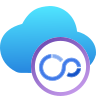
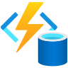
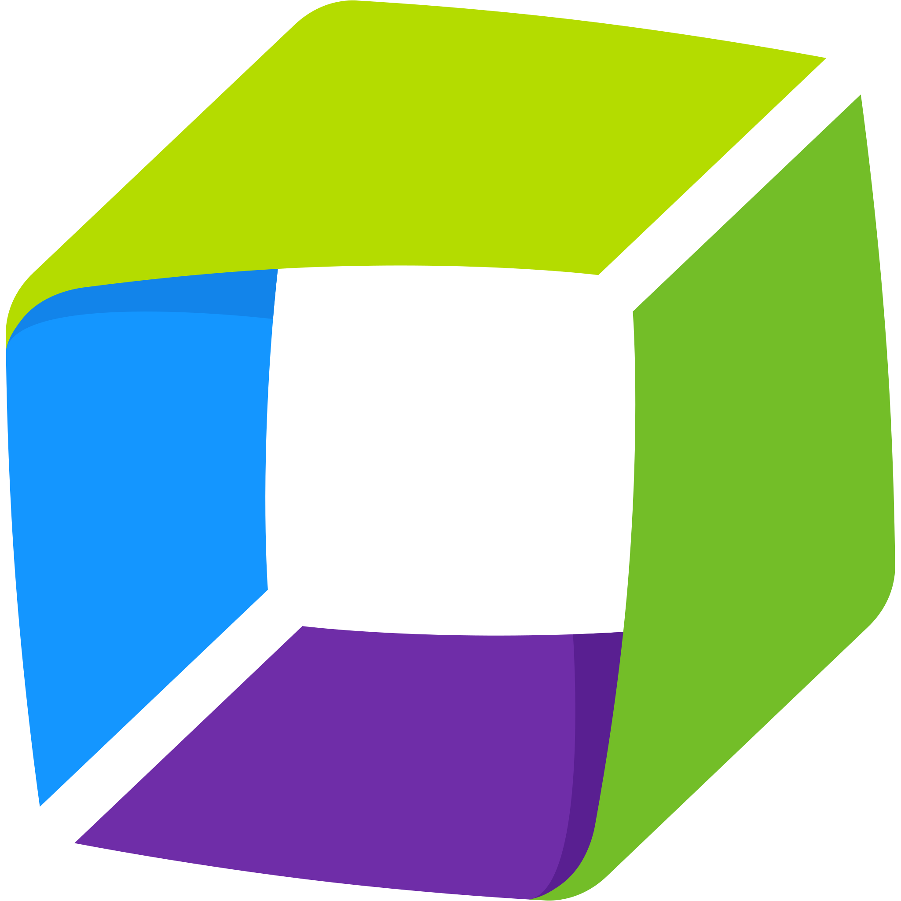

| 1ES | | | |
| 1ES Build Cache
Storage account
(2 resource types share this icon) | Microsoft.CloudTest/buildcaches
Microsoft.Storage/StorageAccounts | cloudtest; Storage, account, objects, blobs, tables, queues, file, files, disks, images, containers, share, shares, browser, gpv2, general-purpose v2, adls2, ADLS Gen2, Azure Data Lake, datalake, Data Lake Gen 2, S3, EBS, Glacier, IaaS, Azure Files, Azure Premium Files, Shared file system, file share, SMB, NFS, Volume, NAS | Create a storage account to store up to 500TB of data in the cloud. Use a general-purpose storage account to store object data, use a NoSQL data store, define and use queues for message processing, and set up file shares in the cloud. Use the Blob storage account and the hot or cool access tiers to optimize your costs based on how frequently your object data is accessed. |
| 1ES Hosted Pool
Managed DevOps Pool
(2 resource types share this icon) | Microsoft.CloudTest/hostedpools
Microsoft.DevOpsInfrastructure/pools | cloudtest; DevOps,Dev Centers,Projects | Managed DevOps Pools that meet your team needs. |
| 1ES Image
Extension Version
(2 resource types share this icon) | Microsoft.CloudTest/images
Microsoft.PortalServices/Extensions/Versions | cloudtest | |
| Access Bridge (Operator Nexus)
(2 resource types share this icon) | Microsoft.NetworkCloud/accessBridges
Microsoft.NetworkCloud/clusterAccessBridges | | |
| Access Connector for Azure Databricks | Microsoft.Databricks/accessConnectors | Databricks Access Connectors | Unity Catalog provides unified governance for all data and AI assets in your Lakehouse. Unity Catalog can be configured to use an Azure managed identity to access storage containers on behalf of Unity Catalog users. Managed identities provide an identity for applications to use when they connect to resources that support Microsoft Entra ID authentication. |
| Access Control List | Microsoft.ManagedNetworkFabric/accessControlLists | | |
| Access Review
Global Secure Access
Microsoft Entra Connect
Microsoft Entra ID
(4 resource types share this icon) | | access, reviews, review, erm; UX UI design patterns sample extension ibiza consistency; microsoft, entra, connect, provisioning; Microsoft Entra ID,ME-ID,Azure AD,AAD,AD,MFA,Authentication,Azure Active Directory | Consistent experiences across Azure enable users to leverage a few well-known and researched design patterns throughout Azure. |
| Account Lockout
Custom Attribute
(2 resource types share this icon) | | account, lockout; custom, security, attributes | |
| Action group | microsoft.insights/actiongroups | | |
| Activity | | | |
| Activity log
Audit Log
Operation log (classic)
User Registration Detail
(4 resource types share this icon) | | audit, events, logs; user, users, registration, details, detail, auth, authentication, method, methods | |
| Activity log alert rule
Alerts
Log search alert rule
Metric alert rule
Smart detector alert rule
(5 resource types share this icon) | microsoft.insights/activitylogalerts
microsoft.insights/scheduledqueryrules
microsoft.insights/metricalerts
microsoft.alertsmanagement/smartdetectoralertrules | | |
| Activity Report
Multifactor Authentication Registration Policy
(2 resource types share this icon) | | activity, activities, report, reports, auth, authentication; multifactor, authentication, registration, policies, auth, policy, mfa | |
| Adaptive Shield
Adaptive Virtual Patching
(2 resource types share this icon) | Microsoft.NetworkSecurity/neuroShields | adaptive shield, adaptiveshield, adaptive shields, adaptiveshields, adaptiveShield, neuroshield, neuroshields, ns; adaptive virtual patching, avp, azure adaptive virtual patching, threat detection | Azure Adaptive Shield provides intelligent network security with adaptive threat detection and automated response capabilities.
Azure Adaptive Virtual Patching provides intelligent network security with adaptive threat detection and automated response capabilities. |
| Admin Consent Request | | admin, consent, request, requests, administrator, application, applications | |
| Admin Consent Setting
App Launchers Setting
Enterprise Applications User Setting
Enterprise State Roaming
External Collaboration Setting
Group Expiration
Group Naming Policy
One-time Bypass
Users At Risk Detected Alert
Users Registration
Weekly Digest
Workflow Settings
(12 resource types share this icon) | | admin, consent, settings, setting; app, launcher, launchers, setting, settings; user, users, settings, setting, enterprise, application, applications; enterprise, state, roaming; external, collaboration, settings, allowlist, policy; group, groups, expiration; group, groups, naming, policy, policies; one-time, bypass, multifactor, authentication, mfa; users, user, risk, detected, alerts, alert; user, users, registration, registrations; users, risk, detected, alert, alerts, user, weekly, digest; workflow, settings, setting, lifecycle, management | |
| Administrative units | | AU | |
| Administrator Policy
Enterprise Application Overview
External Identity Getting Started
(3 resource types share this icon) | | admin, policy, administrator, policies, password, reset; enterprise, application, applications, app, apps, overview; external, identity, identities, getting, started | |
| ADR asset | microsoft.deviceregistry/convergedAssets | ADR asset management | An ADR asset is a physical or logical entity that represents a device, machine, system, or process. When you create an asset, it will appear here and can be managed from this table. |
| ADR asset | microsoft.deviceregistry/namespaces/assets | ADR asset management | An asset is a physical or logical entity that represents a device, machine, system, or process. When you create an asset under this namespace, it will appear here and can be managed from this table. |
| ADR asset (classic) | microsoft.deviceregistry/assets | ADR asset (classic) management | An asset is a physical or logical entity that represents a device, machine, system, or process. When you create an asset, it will appear here and can be managed from this table. |
| ADR asset endpoint profile | microsoft.deviceregistry/assetEndpointProfiles | ADR asset endpoint profile | Consistent experiences across Azure enable users to leverage a few well-known and researched design patterns throughout Azure. |
| ADR certificate authority | Microsoft.DeviceRegistry/namespaces/certificateAuthorities | ADR certificate authority management | An Azure Device Registry certificate authority. |
| ADR device | microsoft.deviceregistry/devices | ADR device management | Consistent experiences across Azure enable users to leverage a few well-known and researched design patterns throughout Azure. |
| ADR device
ADR registry device
(2 resource types share this icon) | microsoft.deviceregistry/namespaces/devices
microsoft.deviceregistry/namespaces/registryDevices | namespace device;devices;ADR device; registry device;devices;ADR registry device | A namespace device represents a device within a namespace.
A registry device represents a device enrolled in the device registry within a namespace. |
| ADR group | microsoft.deviceregistry/namespaces/groups | ADR groups | Groups are a collection of devices that can be managed together as a single entity. |
| ADR job | microsoft.deviceregistry/namespaces/jobs | ADR jobs | Jobs define operations for devices in an Azure Device Registry namespace. |
| ADR namespace | microsoft.deviceregistry/namespaces | ADR namespace management | An ADR namespace is a logical container for a fleet of assets and devices. It allows customers to manage these resources as a single unit within their Azure subscription and provides a managed identity that can be used to access other Azure resources. |
| ADR schema registry | microsoft.deviceregistry/schemaRegistries | ADR schema registry management | An ADR schema registry is a synchronized schema store that operates both at the edge and in the cloud. It stores and serves schemas of messages generated by assets or provided by users. |
| ADR software update (preview) instance | microsoft.deviceupdate/updateinstances | | |
| Advisor | | Azure, Azure Advisor, Adviser, Recommendations, best practices, installation checks, configuration checks | |
| Agent Fabric (Dev Build) | Microsoft.NetworkSecurity/agentFabrics | agent fabric network security spiffe identity policy workloads | Agent Fabric provides identity, policy, and secure connectivity for agentic workloads. |
| Agent ID | | agent id, agent identity, agent identities, agent blueprint, agent blueprints, agentic | Create and manage agent identities for your AI agents and agentic applications. |
| Agent Pool | Microsoft.NetworkCloud/kubernetesClusters/agentPools | | |
| Agent Private Access | microsoft.chaos/privateaccesses | chaos studio,chaos engineering,experiment,fault injection,reliability,resilience,resiliency,availability,outage,failure,disruption,drill,stress test,disaster,testing,validation,validate,agent private access | Create an agent private access resource to enable chaos agent experimentation using private networking. |
| Agentic Web App | Microsoft.Cdn/webAgents | Agentic Web App, Web Chat, AI Agent, Knowledge Sources, Azure Front Door, Agents, Chat, Chatbot | Agentic Web Apps let you embed AI-powered chat experiences directly into your website. Configure how the agent behaves, ground responses with your knowledge sources, and expose the experience through Azure Front Door domains and paths to make it available to users. |
| Agents | | | |
| AI Gateway | Microsoft.ApiManagement/aigateways | | Manage AI Gateway resources and open the AI Gateway portal. |
| AI Manager (Preview)
Model deployment (Preview)
(2 resource types share this icon) | Microsoft.ContainerService/aiManagers
Microsoft.ContainerService/aiManagers/namespaces/modelDeployments | | |
| AI Manager Namespace (Preview) | Microsoft.ContainerService/aiManagers/namespaces | | |
| Alert | | | |
| Alert processing rule | microsoft.alertsmanagement/actionrules | | |
| All Devices
Devices Overview
(2 resource types share this icon) | | all, devices; devices, overview | |
| All Resources
(2 resource types share this icon) | Microsoft.LoadTestService/allservices
Microsoft.LoadTestService/allservicesfairfax | | |
| All resources
Backup job
Cross-tenant Access Setting
Health events
Linux OS
Managed subscriptions
managed subscriptions
Microsoft defender
Outages
Pool
Power states
Provisioning states
Recommendations
Virtual machine
Windows OS
(25 resource types share this icon) | Microsoft.ComputeHub/all
Microsoft.ComputeHub/Backup
Microsoft.ComputeHub/HealthEvents
Microsoft.ComputeHub/LinuxOSType
Microsoft.ManagedOps/ManagedOps
Microsoft.ComputeHub/MicrosoftDefenderFreeTrialSubscription
Microsoft.ComputeHub/MicrosoftDefenderStandardSubscription
Microsoft.ComputeHub/Outages
Microsoft.DevCenter/projects/pools
Microsoft.ComputeHub/PowerStateDeallocated
Microsoft.ComputeHub/PowerStateRunning
Microsoft.ComputeHub/PowerStateStopped
Microsoft.ComputeHub/ProvisioningStateFailedResources
Microsoft.ComputeHub/ProvisioningStateSucceededResources
Microsoft.ComputeHub/AdvisorCost
Microsoft.ComputeHub/AdvisorOperationalExcellence
Microsoft.ComputeHub/AdvisorPerformance
Microsoft.ComputeHub/AdvisorReliability
Microsoft.ComputeHub/AdvisorSecurity
Microsoft.All/virtualMachines
Microsoft.Compute/VirtualMachines
Microsoft.ComputeHub/WindowsOSType | UX UI design patterns sample extension ibiza consistency; cross-tenant, access, settings, xtap; Managed subscriptions; managed subscriptions; Microsoft Dev Box,Azure Deployment Environments; VM, Windows 10, Ubuntu, ec2, Red Hat, Debian, SUSE, CentOS, Windows Server, arc vm, arc, hci vm, azure stack hci vm, azure stack hci, avs vm, azure vmware solution, scvmm, vmware; virtual,vm,vms,compute,machine,arc,azurearc,hybrid | Create VMs that scale, optimize cost and performance, and support a mix of sizes, zones, and regions—all easily managed in one place.
No resource has availability related health events.
Any subscriptions with machines enrolled in machine management will be displayed here.
Create a dev box pool to allow developers to self-serve developer workstations using pre-approved templates and settings.
Create a virtual machine that runs Linux or Windows. Select an image from the marketplace or use your own customized image. |
 | All Resources
Azure AI services
(2 resource types share this icon) | Microsoft.CognitiveServices/BrowseAllServices
Microsoft.CognitiveServices/BrowseAIServices | Vision, computer vision, face, face recognition, face identification, OCR, optical character recognition, content moderator, text moderation, image moderation, video moderation, emotion, emotion recognition, custom vision, custom computer vision, video indexer, video analysis, image analysis, translator, speech translator, text translator, speech translation, text translation, translate, speaker recognition, speaker identification, text to speech, speech to text, tts, stt, custom speech, custom voice, custom acoustic model, language understanding, luis, spell check, speller, language, text analysis, sentiment analysis, key phrase extraction, QnA maker, QnAMaker, q&a, Q & A, question extraction, custom decision, reinforcement learning, Azure AI services, cognitive, vision, speech, language, knowledge, face, vision, academic, spell, spellcheck, autosuggest, speech, custom speech, customspeech, emotion, speaker recognition, recognition, translation, translator, translate, language, textanalytics, analytics, weblanguagemodel, weblm, languagemodel, web language model, language model, recommendations, language understanding, luis, search, content moderator, Personal, Personalizer, Personalization, Personalized, Ink, Ink analysis, Ink recognition , Ink recognizer, translator text, anomaly detector, openai, open ai, GenAI, Agents, Generative AI, Foundry, Foundry, AI Studio, AI, Finetuning, Finetune, AI Services | You platform to build generative AI solutions and custom copilots |
| All resources
Policy compliance
Storage center
(3 resource types share this icon) | Microsoft.StorageHub/all
Microsoft.StorageHub/PolicyComplianceResources | Storage Hub account disk elastic san move data box file sync task infrastructure unstructured data scale management object block hybrid migration; Policy compliance; storage center hub account disk elastic san move data box file sync task infrastructure unstructured data scale management object block hybrid migration | Manage unstructured data at scale. Discover, browse, and deploy secure storage solutions that grow with your enterprise needs. |
| Analysis | Microsoft.Premonition/Libraries/Analyses | Premonition biology metagenomic analysis | Analysis of one or more samples |
| Analysis Services | Microsoft.AnalysisServices/servers | analysis services,asazure,tabular models,data modeling,azure | Manage Analysis Services servers, monitor usage, and configure security settings. |
| Anomaly detector | Microsoft.CognitiveServices/BrowseAnomalyDetector | AnomalyDetector | Identify potential problems early on. |
| Anyscale Cloud
Anyscale Cloud Resource
(6 resource types share this icon) | Anyscale.Platform/clouds
Private.AnyscaleDev/clouds
Private.AnyscaleStaging/clouds
Anyscale.Platform/clouds/cloudResources
Private.AnyscaleDev/clouds/cloudResources
Private.AnyscaleStaging/clouds/cloudResources | Anyscale, Ray, AKS, Kubernetes, Cloud, AI, ML, Compute, Storage, Networking | Anyscale Clouds on Azure allow you to run managed Ray workloads natively within your Azure infrastructure, securely pairing Anyscale's AI/ML platform with Azure Kubernetes Service (AKS). This setup provides elastic scalability, optimized distributed compute, and unified billing while utilizing your existing Azure-native storage and networking. |
| Anyscale Compute Config
(3 resource types share this icon) | Anyscale.Platform/clouds/computeConfigs
Private.AnyscaleDev/clouds/computeConfigs
Private.AnyscaleStaging/clouds/computeConfigs | | |
| Anyscale Container Image
(3 resource types share this icon) | Anyscale.Platform/clouds/containerImages
Private.AnyscaleDev/clouds/containerImages
Private.AnyscaleStaging/clouds/containerImages | | |
| Anyscale Job
(3 resource types share this icon) | Anyscale.Platform/clouds/projects/jobs
Private.AnyscaleDev/clouds/projects/jobs
Private.AnyscaleStaging/clouds/projects/jobs | | |
| Anyscale Project
(3 resource types share this icon) | Anyscale.Platform/clouds/projects
Private.AnyscaleDev/clouds/projects
Private.AnyscaleStaging/clouds/projects | | |
| Anyscale Service
(3 resource types share this icon) | Anyscale.Platform/clouds/projects/services
Private.AnyscaleDev/clouds/projects/services
Private.AnyscaleStaging/clouds/projects/services | | |
| Anyscale Workspace
(3 resource types share this icon) | Anyscale.Platform/clouds/projects/workspaces
Private.AnyscaleDev/clouds/projects/workspaces
Private.AnyscaleStaging/clouds/projects/workspaces | | |
| Apache Spark pool | Microsoft.Synapse/workspaces/bigDataPools | Apache Spark pool | Apache Spark pool for Synapse Analytics workspaces |
| Api App | | | |
| API Center | Microsoft.ApiCenter/services | | API Center is a structured repository that provides comprehensive information about APIs available within your organization. |
| API connection | Microsoft.Web/connections | | API connection helps you easily connect your workflow to services and systems. |
| API Management service | Microsoft.ApiManagement/service | | Hybrid and multi-cloud management, observability, and discovery platform for APIs across all environments. |
| API Playground | | | |
| API server health
Azure Arc Kubernetes cluster
Component compatibility
Deprecated APIs
Node readiness
Pod Disruption Budgets
(6 resource types share this icon) | Microsoft.Arc/upgradeInsightsApiServerHealth
Microsoft.Arc/kubernetesResources
Microsoft.Arc/upgradeInsightsComponentCompatibility
Microsoft.Arc/upgradeInsightsDeprecatedApis
Microsoft.Arc/upgradeInsightsNodeReadiness
Microsoft.Arc/upgradeInsightsPodDisruptionBudgets | | API server health
Component compatibility
Deprecated APIs
Node readiness
Pod Disruption Budgets |
| App | | | |
| App attach package | Microsoft.DesktopVirtualization/appAttachPackages | WVD, Windows Virtual Desktop, AVD, Azure Virtual Desktop, App attach, App attach package | |
| App Compliance Automation Tool for Microsoft 365 | | Microsoft 365 App Compliance | App Compliance Automation Tool for Microsoft 365 is an application-centric compliance automation tool that helps you complete Microsoft 365 Certification with greater ease and convenience. |
| App Configuration | Microsoft.AppConfiguration/configurationStores | feature flags, feature flag, AppConfig, config, configuration, App Config | Azure App Configuration lets you centrally manage application configuration and feature flags in the cloud. Create a resource today to be able to manage your configuration as code, propagate changes without having to redeploy, and easily integrate configuration with CI/CD processes. |
| App proxy
Create Quick Access configuration
(2 resource types share this icon) | | application; create, quick, access, configuration, app, application, proxy, connector, group | |
| App registration | | service account, service accounts, app registration, app registrations | |
| App server instance for SAP solutions | Microsoft.Workloads/sapVirtualInstances/applicationInstances | App server, Application server, SAP, Instance, Application server instance for SAP solutions, Application server instances for SAP solutions, App server instance for SAP solutions, App server instances for SAP solutions,
Appl server instance for SAP solutions, Appl server instances for SAP solutions | App server instance is part of a Virtual Instance for SAP solutions. Try changing or clearing your filters. You can also Create a Virtual instance for SAP solutions that runs on Azure to take advantage of the best that Azure has to offer. |
| App Service
App Service (Slot)
Web App
(3 resource types share this icon) | Microsoft.Web/sites
Microsoft.Web/sites/slots | app service,web app,webapp,web application,website,web site,mobile,api,.net,asp.net,.net code,asp.net core,java,node,php,python,ruby,linux,windows,containers,docker,elastic beanstalk,lightsail,heroku | Create, build, deploy, and manage powerful web, mobile, and API apps for employees or customers using a single back-end. Build standards-based web apps and APIs using .NET, Java, Node.js, PHP, and Python. |
| App Service Builder (preview) | Microsoft.Web/builderApps | app service builder,builder apps,app service,builder,preview | Create and manage apps in the App Service Builder portal. |
| App Service Certificate
Certificate
Certificate Authority
Domain Name
(4 resource types share this icon) | Microsoft.CertificateRegistration/certificateOrders | app service,ssl,tls,certificate,pfx; certificate, authorities, authority, certificates, cert; custom, domain, names | |
| App Service Domain
Domain Name
(2 resource types share this icon) | Microsoft.DomainRegistration/domains | app service,domain,hostname,vanity domain,custom domain,domain name | |
| App Service Environment
App Service Kubernetes Environment
(2 resource types share this icon) | Microsoft.Web/HostingEnvironments
Microsoft.Web/KubeEnvironments | app service environment,app service,isolated,ase; App Service Kubernetes Environment | App Service Environments are a premium service of Azure App Service that provides a fully isolated and dedicated environment for securely running Azure App Service apps at high scale.
App Service Kubernetes Environments browse text |
| App Service plan | Microsoft.Web/serverFarms | app service,linux,windows,containers,docker,elastic beanstalk,lightsail,heroku | App Service plans represent the collection of physical resources used to host your apps, like location, scale, size and SKU |
| Application | Microsoft.GuestConfiguration/applications | applications,apps,packages,software,inventory,machine,guestconfiguration | Applications and packages reported by Machine Configuration across your Arc-enabled servers and Azure virtual machines. Use the filters to narrow the list by subscription, resource group, machine type, or machine. |
| Application Credential Activity
Configuration Group Schema
(2 resource types share this icon) | Microsoft.HybridNetwork/publishers/configurationGroupSchemas | application, activity, activities, credential, app; Azure Operator Service Manager, AOSM, Operator, Operator Service Manager, Schema | |
| Application gateway | Microsoft.Network/applicationGateways | AppGw, Load balancer (Layer 7/HTTP), SSL offloading, Web application firewall (WAF), L7, Gateway, Application | Azure Application Gateway gives you application-level routing and load balancing services that let you build a scalable and highly-available web front end in Azure. |
| Application Gateway | Microsoft.Management/managementGroups/providers/privateLinkAssociations | AppGw, Load balancer (Layer 7/HTTP), SSL offloading, Web application firewall (WAF), L7, Gateway, Application | |
| Application Gateway for Containers | Microsoft.ServiceNetworking/trafficControllers | application gateway for containers, appgw, agc, agic, application gateway ingress controller, application load balancer, alb, kubernetes load balancer | Application Gateway for Containers |
| Application Gateway WAF policy
Content Delivery Network WAF policy
Front Door WAF policy
(3 resource types share this icon) | Microsoft.Network/ApplicationGatewayWebApplicationFirewallPolicies
Microsoft.Cdn/CdnWebApplicationFirewallPolicies
Microsoft.Network/FrontDoorWebApplicationFirewallPolicies | Application gateway, Frontdoor, Front Door, Load balancer, Network, AFD, CDN, Azure Front Door Service, Content Delivery Network, acceleration, DDoS, Protection, Waf, Web application firewall; Application gateway, Load balancer, Network, AFD, CDN, Content Delivery Network, acceleration, DDoS, Protection, Waf, Web application firewall | Create a Web Application Firewall policy to protect your web applications from common exploits and vulnerabilities, keep your service available and help you meet compliance requirements. |
| Application group | Microsoft.DesktopVirtualization/ApplicationGroups | WVD, Windows Virtual Desktop, AVD, Azure Virtual Desktop, Application group, Application group | |
| Application Insights | microsoft.insights/components | | |
| Application Policy
Microsoft Entra authentication methods
(2 resource types share this icon) | | policy, policies, application, applications; Authentication methods,MFA,Password,Credentials,Multi-factor Authentication,Passwordless,Authenticator,Passkey | |
| Application security group | Microsoft.Network/applicationSecurityGroups | Network security, Policy, Policies, ASG, NSG | You can use application security groups to configure network security as natural extension of an application’s structure, by arbitrarily grouping VMs and defining network security policies based on those groups. You can reuse your security policy and scale without manual maintenance of explicit IP addresses. The platform handles the complexity of explicit IP addresses and multiple rule sets, so you can focus on your business logic. |
| Application Template | | workload,workloads,template,templates,solution,solutions,starter app,ai workloads,quick start,azd templates,executable docs | A curated collection of workloads that are deployable for the end user. |
| Approval
Arc Load Balancer
Bing Resource
Compute infrastructure
Connected Cache for ISP
kubernetes 1 - Azure Arc
Managed Ops Efficiency
Microsoft SaaS (Preview)
Migrate Assessment
My Resource
Network Security Hub
Private Segmentation Manager
Product Overview
SafeFly
ScanX Management
Segmentation Manager
VLCentral Help
Wave Migration
(34 resource types share this icon) | microsoft.kubernetesruntime/loadbalancers
Microsoft.Bing/accounts
Microsoft.ComputeHub/ComputeHubMain
Microsoft.ConnectedCache/ispCustomers
microsoft.kubernetes/connectedClusters
Providers.Test/statefulIbizaEngines
Microsoft.SaaSHub/cloudServices
Microsoft.Genome/accounts
Private.ZeroTrustSegmentation/segmentationManagers
Microsoft.ZeroTrustSegmentation/segmentationManagers | approvals,approval,workflow,review,sign-off; UX UI design patterns sample extension ibiza consistency; web search, image search, video search, visual search, custom search, entity search, news search, auto suggest, autosuggest, search, spell, spellcheck, autosuggest, speech, custom speech, customspeech, bing custom search, bing search, bing spellcheck, bing spell check, bing autosuggest, bing auto suggest, bing entity search; Connected Cache for ISP, Mcc for ISP, Microsoft Connected Cache; network security hub; scanx | Approvals gives you greater control over resource changes by requiring review and sign-off before they deploy.
Consistent experiences across Azure enable users to leverage a few well-known and researched design patterns throughout Azure.
Embed the ability of search into your services using Bing's search APIs.
Create VMs that scale, optimize cost and performance, and support a mix of sizes, zones, and regions—all easily managed in one place.
Software-only caching solution that delivers Microsoft static content within operator networks.
Network Security Hub for 1P solutions
A segmentation manager will help you generate a graph analysis of the workloads based on your flow logs.
Product Overview
SafeFly is Azure's change management approval tool that gathers rich deployment metadata and helps reviewers evaluate quality and risk. It streamlines the deployment process while reducing impacts and improving reliability for Azure customers. |
| Approval | Microsoft.Mission/approvals | | Approvals require additional oversight on critical Azure Enclave actions. Approvals enable administrators to queue the creation of new resources or change existing resources while requiring oversight and approval before the change can be made. Approvals can only be reviewed by someone with `Approver Role` in Azure. |
| Approvals | | | Consistent experiences across Azure enable users to leverage a few well-known and researched design patterns throughout Azure. |
| Apps | | | |
| Arc gateway associated resource
Azure Arc gateway
(2 resource types share this icon) | Microsoft.HybridCompute/ArcGatewayAssociatedResources
Microsoft.HybridCompute/gateways | gateway, arc gateway associated resources, associated resources; gateway, arc gateway | If you use enterprise proxies or firewalls to manage outbound traffic from your environment, the Azure Arc gateway allows you to onboard infrastructure to Azure Arc with a significantly reduced list of required endpoints. |
| Artifact Signing Account
Artifact Signing Account (Private)
(2 resource types share this icon) | Microsoft.CodeSigning/codesigningaccounts
Private.CodeSigning/codesigningaccounts | UX UI design patterns sample extension ibiza consistency | Artifact Signing is a fully managed end-to-end solution for signing. It manages all the keys and certificates through the Certification Authorities that are part of the Microsoft Trusted Root Program and meet WebTrust Certification and the latest industry compliance guidelines. |
| Astro Organization | astronomer.astro/organizations | | Run every data pipeline in your ecosystem with Apache Airflow on Astro, the developer-first and fully managed service. |
| Attestation provider | Microsoft.Attestation/attestationProviders | attestation | Microsoft Azure Attestation is a solution for attesting Trusted Execution Environments (TEEs) such as Intel® Software Guard Extensions (SGX) enclaves and Virtualization-based Security (VBS) enclaves. Attestation is a process of demonstrating that software binaries were properly instantiated on a trusted platform. |
| Auth Method | | auth, method, methods, authentication, passkey | |
| Authentication Context | | authentication, context, contexts, conditional, access, auth | |
| Authentication Methods Activity
Metrics
(2 resource types share this icon) | | authentication, auth, method, methods, activity, activites | |
| Authentication Methods Setting | | authentication, auth, methods, method, settings, setting | |
| Authentication Policy | Microsoft.Network/authenticationPolicies | authentication policy, authentication policies, jwt validation, user authentication, entra, application gateway | Create and manage Authentication Policies for supported application-layer networking resources. |
| Authentication Strength | | authentication, strengths, strength, conditional, access, auth | |
| Automanage | | automanage, best practices, machine best practices, azure automanage | |
| Automation Account
Network Function Definition
Network Function Definition Version
Network Service Design
Network Service Design Version
Publisher Artifact Manifest
Publisher Artifact Store
Site Network Service
(8 resource types share this icon) | Microsoft.Automation/AutomationAccounts
Microsoft.HybridNetwork/publishers/networkFunctionDefinitionGroups
Microsoft.HybridNetwork/publishers/networkFunctionDefinitionGroups/networkFunctionDefinitionVersions
Microsoft.HybridNetwork/publishers/networkServiceDesignGroups
Microsoft.HybridNetwork/publishers/networkServiceDesignGroups/networkServiceDesignVersions
Microsoft.HybridNetwork/publishers/artifactStores/artifactManifests
Microsoft.HybridNetwork/publishers/artifactStores
Microsoft.HybridNetwork/siteNetworkServices | automate, runbook, update, patch, manage, inventory, change, track, dsc, powershell, script, workflow, flow, process, serverless, schedule, python, watcher, hybrid; Azure Operator Service Manager, AOSM, Operator, Publisher, Operator Service Manager, NFD; Publisher, NFDV; Azure Operator Service Manager, AOSM, Operator, Publisher, Operator Service Manager, NSD; Publisher, NSDV; Publisher; Azure Operator Service Manager, AOSM, Operator, Operator Service Manager; Azure Operator Service Manager, AOSM, Operator, Operator Service Manager, SNS | |
| Automation Environment | Microsoft.Logic/automationProjects | | Browse existing Automation environments |
| Autonomous AI Database
Network Anchor
Resource Anchor
(3 resource types share this icon) | oracle.database/autonomousdatabases
oracle.database/networkanchors
Oracle.Database/resourceanchors | | |
| Autoscale | | | |
| Availability set | Microsoft.Compute/availabilitySets | | Create an availability set to provide redundancy for your application. Create two or more virtual machines in the availability set to distribute their placement across Azure hardware clusters. |
| Availability test | microsoft.insights/webtests | | |
| AzPubSub | | UX UI design patterns sample extension ibiza consistency | Consistent experiences across Azure enable users to leverage a few well-known and researched design patterns throughout Azure. |
| Azure AD B2C
B2C Tenant
External Configuration Tenant
Guest Usage
(4 resource types share this icon) | Microsoft.AzureActiveDirectory/b2cDirectories
Microsoft.AzureActiveDirectory/ciamDirectories
Microsoft.AzureActiveDirectory/guestUsages | | |
| Azure AI Foundry
Cohere
Core42
Llama2
Mistral
Model Provider
Nixtla
(8 resource types share this icon) | Microsoft.MachineLearningServices/aistudio
Microsoft.MachineLearningServices/aistudiocreate | AI, Hub, AI Studio, Azure AI Studio, AI Foundry, Azure AI Foundry, AI Hub, AI Project, AIStudio, Artificial Intelligence, Preview, Deep Learning, Analytics, Data, NLP, Natural Language Processing, CNN, Neural Network, Train, Computer Vision, Models, Data Science, Classification, Regression, Reinforcement Learning, LLM, Chatbot | Your platform to build generative AI solutions and custom copilots |
| Azure AI services multi-service account | Microsoft.CognitiveServices/BrowseAllInOne | AllInOne | Add multiple Azure AI services to your application. |
| Azure AI Video Indexer
Azure AI Video Indexer Arc extension
(2 resource types share this icon) | Microsoft.VideoIndexer/accounts | AI video indexer | Extract insights from video and audio files using a rich set of AI media technologies |
| Azure API for FHIR
Health Data Services workspace
(2 resource types share this icon) | Microsoft.HealthcareApis/services
Microsoft.HealthcareApis/workspaces | FHIR, Healthcare, FHIR API, Health Data Services, HL7, DICOM, medical imaging, PACS, VNA; FHIR, Healthcare, FHIR API, Health Data Services, HL7, DICOM | Azure API for FHIR® is a managed, standards-based, and compliant healthcare data platform. It enables organizations to bring their clinical health data into the cloud based on the interoperable data standard FHIR®.
Health Data Services is a secure platform designed for Protected Health Information and related health data workloads in the cloud. It enables analytics and machine learning with health data, and powers scalable solutions in health and life sciences. The Azure Health Data Services are based on the interoperable data standard FHIR® and DICOMweb™. Each instance of Azure Health Data Services is a unique workspace, which is a grouping of data services that share commonality. Within a single workspace, you can provision multiple FHIR and DICOM services which work seamlessly with one another. |
| Azure App Testing | | Testing, Azure load testing, Load testing tools, High scale testing, Stress testing, Soak testing, Break point testing, Scalability Testing, Spike Testing, JMeter, Locust, Actionable insights, Performance testing, Resilient applications, URL Testing, playwright, test, testing, workspace, Functional testing, browser testing, browser automation, automation, ui testing | |
| Azure Arc
Azure Arc enabled resource
(3 resource types share this icon) | Microsoft.Arc/all
Microsoft.Arc/allFairfax | arc, azurearc, server, onprem, on prem, on-prem, on premise, on-premise, on premises, on-premises, hybrid, non-azure, nonazure, machine, connect, multicloud, management, azure anywhere, arc center, arccenter, arc-center, azure arc | Azure Arc simplifies management of complex environments that span clouds, datacenters, and edge devices.
Azure Arc extends Azure management tools to on-premises, multi-cloud environments, and the edge. Start here by adding any of your existing resources. |
| Azure Arc data controller | Microsoft.AzureArcData/dataControllers | Azure Arc data controller | Create an Azure Arc data controller to enable Azure data services in the Kubernetes environment of your choice. |
| Azure Arc private link scope | Microsoft.HybridCompute/privateLinkScopes | arc, azurearc, private link scope, private, endpoints, connection, network, PLS | Azure Arc Private link scope enables you to access Azure PaaS services and Azure hosted customer owned services over a private endpoint in your virtual network. Use Azure Arc Private link scopes to privately connect your Azure Arc resources. |
| Azure Arc virtual machine
Azure Local virtual machine - Azure Arc
SCVMM virtual machine - Azure Arc
VMware + AVS virtual machine
(5 resource types share this icon) | Microsoft.All/arcVirtualMachines
Microsoft.AzureStackHci/virtualMachines
Microsoft.scvmm/virtualMachines
Microsoft.ConnectedVMwarevSphere/VirtualMachines
Microsoft.HybridCompute/Machines/Microsoft.ConnectedVMwarevSphere/virtualMachineInstances | arc, virtual, machine, hybrid, onprem, on prem, on-prem, on premise, on-premise, on premises, on-premises, multicloud | Create an Azure Arc virtual machine that runs on your private cloud. Select an image from the marketplace or use your own customized image. |
| Azure Cache for Redis | Microsoft.Cache/Redis | | An in-memory data store that improves the performance and scalability of an application that uses backend data stores heavily. Redis brings a critical low-latency and high-throughput data storage solution to modern applications. |
| Azure Center for SAP solutions | | ACSS, Azure, SAP, ACS, SAP Center, Azure Center for SAP solutions | Azure Center for SAP solutions is an Azure native offering that makes SAP a top-level workload in Azure. It enables end-customers and service providers to seamlessly deploy or manage their SAP systems on Azure. |
| Azure Cloud HSM | Microsoft.HardwareSecurityModules/cloudHsmClusters | Cloud,Cloud HSM, HSM, RSA, EC, AES | Azure Cloud HSM provides customer-Cloud, single tenant, highly available HSMs to store and manage your cryptographic keys. |
| Azure compute gallery | Microsoft.Compute/galleries | shared image gallery sig gallery | Azure compute galleries help you organize your custom managed images, share images with users, and replicate images to multiple regions. |
| Azure Copilot admin center
Space
(2 resource types share this icon) | Microsoft.Copilot/spaces | | Azure Copilot is an AI-powered tool to help you do more with Azure. With Azure Copilot, you can gain new insights, discover more benefits of the cloud, and orchestrate across both cloud and edge.
Spaces provide Copilot persistent context that can be used by many across multiple chats. |
| Azure Copilot agent | Microsoft.Copilot/chatAgents | | An Azure Copilot agent is an Azure resource that represents an autonomous AI agent with a system-assigned managed identity used to access your Azure resources. |
| Azure Cortex | | | |
| Azure Cosmos DB account
Azure Cosmos DB Fleet
Azure Cosmos DB Garnet Cache
Potential Azure Cosmos DB account
(4 resource types share this icon) | Microsoft.DocumentDb/databaseAccounts
Microsoft.DocumentDB/fleets
Microsoft.DocumentDB/garnetClusters
microsoft.documentdb/fleetspacepotentialdatabaseaccounts | Document, Database, DocumentDB, NoSQL, MongoDB, Mongo, Cosmos, CosmosDB, DB; Fleet, Cosmos DB; Document, Database, DocumentDB, Garnet, Cache, Cosmos, CosmosDB, DB, Managed, Instance | Create a globally distributed, multi-model, fully managed database using API of your choice. Or try it for free, up to 20k RU/s, for 30 days with unlimited renewal.
Azure Cosmos DB Fleet description goes here
Azure Cosmos DB Garnet Cache description placeholders |
| Azure Cosmos DB for PostgreSQL Cluster | Microsoft.DBforPostgreSQL/serverGroupsv2 | citus,scaleout,scale-out,postgresql,postgres,postgre,open source,oss,database,cluster,cluster,hyperscale,horizontal scaling,sharding,sharded database,relational,Document, Database, DocumentDB, Cosmos, CosmosDB, DB | |
| Azure Data Boundaries | | | |
| Azure Data Box | Microsoft.DataBox/jobs | azure data box, box, data, data box, import, export, import/export, import export, import/export jobs, import export jobs | |
| Azure Data Explorer Cluster
Azure Data Explorer Database
(2 resource types share this icon) | Microsoft.Kusto/clusters
Microsoft.Kusto/clusters/databases | kusto,data explorer,big data,adhoc,analytics,telemetry,adx,azure data,dx,kql,time series; kusto,data explorer,big data,database | Create an Azure Data Explorer cluster to enjoy a big-data, interactive analytics platform that provides ultra-fast telemetry search and advanced text search for any type of data.
Create an Azure Data Explorer database to store your data. |
| Azure Data Manager for Energy | Microsoft.OpenEnergyPlatform/energyServices | Microsoft Energy Data Services, Energy Data Services, microsoft energy data services, energy data services, MEDS, meds, Project Oak Forest, Oak Forest, Oak, project oak forest, oak forest, oak, Azure Open Energy Platform, Open Energy Platform, azure open energy platform,open energy platform, OEP, oep, ADME, adme, Azure data manager, Azure data manager for energy, energy, energy data, microsoft energy, microsoft energy data, oil, gas, petroleum, seismic, seismic data, geoscience | Consistent experiences across Azure enable users to leverage a few well-known and researched design patterns throughout Azure. |
| Azure Data Transfer | | ADT azure data transfer cloud security | Utilize Azure Data Transfer to securely transfer data between various environments. |
| Azure Database for MariaDB server | Microsoft.DBforMariaDB/servers | MariaDB,sql,open source,OSS,database,relational,single | |
| Azure Database for MySQL flexible server | Microsoft.DBforMySQL/flexibleServers | MySQL,sql,open source,OSS,database,relational,flexible,single,flexible server | |
| Azure Database for MySQL single server | Microsoft.DBforMySQL/servers | MySQL,sql,open source,OSS,database,relational,flexible,single,flexible server | |
| Azure Database for PostgreSQL flexible server | Microsoft.DBforPostgreSQL/flexibleServers | postgresql,postgres,postgre,pg,pgsql,open source,oss,database,relational,flexible,single,flexible server | Azure Database for PostgreSQL flexible server is a fully managed Azure Database service based on the PostgreSQL open source relational database, optimized for performance, security and cost efficiency. |
| Azure Database for PostgreSQL single server | Microsoft.DBforPostgreSQL/servers | citus,scaleout,scale-out,postgresql,postgres,postgre,pg,pgsql,open source,oss,database,cluster,server group,hyperscale,horizontal scaling,sharding,sharded database,relational,flexible,single,flexible server | |
| Azure Database Migration Project | Microsoft.DataMigration/services/projects | | |
| Azure Database Migration Service
Azure Database Migration Service (classic)
Azure Database Migration Service resource
(7 resource types share this icon) | Microsoft.DataMigration/dmscentermain
Microsoft.DataMigration/migrationServices
Microsoft.DataMigration/sqlmigrationservices
Microsoft.DataMigration/databaseMigrationServices/migrations
Microsoft.DataMigration/databaseMigrationServices
Microsoft.DataMigration/services
Microsoft.DataMigration/all | database migration service, dms, azure database migration service, azure database migration services | Azure Arc extends Azure management tools to on-premises, multi-cloud environments, and the edge. Start here by adding any of your existing resources. |
| Azure Databricks Service | Microsoft.Databricks/workspaces | Databrick,Databricks,Data Bricks,Spark,AzureSpark,Apache Spark,ML,MLib,Graphx,Fast Spark,Azure Spark,Streaming,Real-time,Real time,SparkBI | Unlock insights from all your data and build artificial intelligence (AI) solutions with Azure Databricks, set up your Apache Spark environment in minutes, autoscale, and collaborate on shared projects in an interactive workspace. |
| Azure Deployment Environment | | Dev centers,Projects | Enable your team to quickly spin up app infrastructure with project-based templates. |
| Azure Device Registry | | | Azure Device Registry |
 | Azure DevOps organization | microsoft.visualstudio/account | | Azure DevOps Organization offers a comprehensive suite of tools for planning, tracking, and delivering software projects, enhancing agility and collaboration. |
| Azure Digital Twins | Microsoft.DigitalTwins/digitalTwinsInstances | UX UI design patterns sample extension ibiza consistency | Consistent experiences across Azure enable users to leverage a few well-known and researched design patterns throughout Azure. |
| Azure DocumentDB (with MongoDB compatibility) | Microsoft.DocumentDB/mongoClusters | MongoDB, Mongo, Free Mongo, Cosmos, CosmosDB, DB, DocumentDB, Document, Database, datastore, NoSQL, nosql, noSQL, JSON, BSON, v-Core, vCore, cluster, sharding, sharded, sharded database, replica set, high availability, migration, open source, vector, vector search, vector database, embeddings, RAG, retrieval augmented generation, hybrid search, DiskANN, change streams | |
| Azure Edge Hardware Center
Azure Edge Hardware Center Address
Device
(4 resource types share this icon) | Microsoft.EdgeOrder/orderItems
Microsoft.EdgeOrder/addresses
Microsoft.EdgeOrder/virtual_orderItems | UX UI design patterns sample extension ibiza consistency | Azure Edge Hardware Center lets you explore and order a variety of first party Azure hardware helping you build and run hybrid apps across datacenters, edge locations, remote offices and the cloud.
Addresses created while ordering hardware through Azure Edge Hardware Center are displayed here.
Follow the secure, low-touch step by step procedure to set up one or thousands of devices. |
| Azure Enclave | | | Accelerate and streamline the deployment and management of secure, isolated, and compliant cloud environments for the most sensitive mission workloads. |
| Azure HDInsight on AKS cluster | | HDInsight, HDI, hdinsight, hdi, Azure HDInsight on AKS cluster, Azure HDInsight on AKS, AKS, Kubernetes | Create an Azure HDInsight on AKS cluster to process massive amounts of data using modern and latest open-source frameworks such as Apache Flink, Trino, Apache Spark, and more. |
| Azure HDInsight on AKS cluster pool | | HDInsight, HDI, hdinsight, hdi, Azure HDInsight on AKS cluster pool, Azure HDInsight on AKS, AKS, Kubernetes | Create an Azure HDInsight on AKS cluster pool to organize your HDInsight on AKS clusters. You can have multiple clusters in the same cluster pool. |
| Azure Health Data and AI Services | Microsoft.Test/healthDataAIServices | | |
| Azure HorizonDB (Preview)
Azure HorizonDB (Preview) parameter group
(3 resource types share this icon) | Microsoft.HorizonDB/clusters
Microsoft.OrionDB/clusters
Microsoft.HorizonDB/parameterGroups | postgresql,postgres,postgre,pg,pgsql,open source,oss,database,relational,orion db,horizondb,orion; parameter group,parameter groups,parameters,config,configuration,horizondb,orion,postgresql,postgres | Azure HorizonDB (Preview) is a fully managed Azure Database service based on the PostgreSQL open source relational database, optimized for performance, security and cost efficiency.
Manage PostgreSQL parameter groups that can be assigned to Azure HorizonDB (Preview) clusters. |
| Azure IoT Hub Device Provisioning Service (DPS) | Microsoft.Devices/ProvisioningServices | | Use Azure IoT Hub Device Provisioning Service to automate IoT device provisioning and registration. |
| Azure Iot Hub Security | | | |
| Azure IoT Operations | Microsoft.IoTOperations/instances | Azure IoT | Azure IoT Operations is a set of composable services that run on Azure Arc-enabled edge Kubernetes clusters. These services can be deployed and managed together. |
| Azure Key Vault Managed HSM | Microsoft.KeyVault/managedHSMs | Managed HSM, HSM key, HSM, RSA, EC, AES | Azure Managed HSM provides single-tenant, highly available HSMs to store and manage your cryptographic keys. |
| Azure Lab Services | | lab labs plan class classroom education hackathon training PC | Easily set up and provide on-demand access to preconfigured virtual machines. Simply define your needs and the service will roll the lab out to your audience. Users access all their lab VMs from a single place. |
| Azure Large Instance | Microsoft.AzureLargeInstance/azureLargeInstances | | |
| Azure Lighthouse | Microsoft.ManagedServices/registrationDefinitions | MSP,Managed Service Provider,Managed Services,Service Provider,Customer,Azure Lighthouse,Lighthouse | |
| Azure Load Testing
Resource
(2 resource types share this icon) | Microsoft.LoadTestService/LoadTests
Microsoft.LoadTestService/supportedResourceTypes | Testing, Azure load testing, Load testing tools, High scale testing, Stress testing, Soak testing, Break point testing, Scalability Testing, Spike Testing, JMeter, Locust, Actionable insights, Performance testing, Resilient applications, URL Testing | Azure Load Testing is a fully managed load testing service that enables developers and testers to generate high-scale load and reveals actionable insights into app performance, scalability, and capacity. |
| Azure Local
Azure Stack | Preview
(5 resource types share this icon) | microsoft.azurestackhci/clusters/updates/updateRuns
microsoft.azurestackhci/clusters/updateSummaries
Microsoft.AzureStackHCI/clusters
Microsoft.AzureStackHCI/devicePools | Azure Local, Azure Stack HCI, HCI; Azure Stack | Azure Local
Azure Stack |
| Azure Local - disconnected operations | Microsoft.Edge/disconnectedoperations | Winfields, Disconnected operations | Create a virtual appliance to run Azure Local disconnected operations |
 | Azure Local Disk - Azure Arc | Microsoft.AzureStackHCI/virtualHardDisks | Azure Local Disks, Azure Stack HCI Disks | Azure Local Disks - Azure Arc |
| Azure Local Disk - Azure Arc | Microsoft.AzureStackHCI/edgeMachines/disks | Azure Local Disks, Azure Stack HCI Disks | Azure Local Disks - Azure Arc |
| Azure Local Gallery image
Azure Local Marketplace Gallery image
(2 resource types share this icon) | Microsoft.AzureStackHCI/galleryImages
Microsoft.AzureStackHCI/marketplacegalleryImages | Azure Local Gallery Images, Azure Stack HCI Gallery Images; Azure Local Marketplace Gallery Images, Azure Stack HCI Marketplace Gallery Images | Azure Local Gallery Images
Azure Local Marketplace Gallery Images |
| Azure Local Logical network | Microsoft.AzureStackHCI/logicalnetworks | Azure Local Logical Networks, Azure Stack HCI Logical Networks | Azure Local Logical Networks |
| Azure Local Machine
Azure Local Virtual Machine - Azure Arc
(2 resource types share this icon) | Microsoft.All/AzureLocalMachines
Microsoft.All/hciVirtualMachines | | |
| Azure Local Network Security Group | Microsoft.AzureStackHCI/networkSecurityGroups | Azure Local Network Security Groups | Azure Local Network Security Groups |
| Azure Local Storage path | Microsoft.AzureStackHCI/storagecontainers | Azure Local Storage Paths, Azure Stack HCI Storage Paths | Azure Local Storage Paths |
| Azure Local VM Network Interface | Microsoft.AzureStackHCI/NetworkInterfaces | Azure Local Network Interfaces, Azure Stack HCI Network Interfaces | Azure Local Network Interfaces |
| Azure Machine Learning registry
Azure Machine Learning workspace
Machine learning online deployment
Machine learning online endpoint
(5 resource types share this icon) | Microsoft.MachineLearningServices/registries
Microsoft.MachineLearningServices/workspaces
Microsoft.MachineLearningServices/workspacescreate
Microsoft.MachineLearningServices/workspaces/onlineEndpoints/deployments
Microsoft.MachineLearningServices/workspaces/onlineEndpoints | ML, AML, Machine Learning, AI, Artificial Intelligence, Preview, Deep Learning, Analytics, Data, NLP, Natural Language Processing, CNN, Neural Network, Workbench, Train, Notebooks, AutoML, Designer, Computer Vision, Models, Data Science, Classification, Regression, Reinforcement Learning | Workspaces are where you manage all the models, assets, and data related to your machine learning projects. Create one now to start using Azure Machine Learning. |
| Azure Managed Grafana | Microsoft.Dashboard/grafana | Azure, Managed, Grafana, Azure Managed Grafana | Run a fully managed instance of Grafana that's automatically connected to your Azure resources. |
| Azure Managed Instance for Apache Cassandra | Microsoft.DocumentDB/cassandraClusters | Document, Database, DocumentDB, Apache, Cassandra, Cluster, Cosmos, CosmosDB, DB, Managed, Instance | Create a Microsoft Azure Managed Instance for Apache Cassandra |
| Azure Managed Lustre | Microsoft.StorageCache/amlFilesystems | UX UI design patterns sample extension ibiza consistency | File caching for high-performance computing (HPC). Run flexible, file-based workloads in Azure. |
| Azure Managed Redis | Microsoft.Cache/RedisEnterprise | | An in-memory data store that improves the performance and scalability of an application that uses backend data stores heavily. Azure Managed Redis brings a critical low-latency and high-throughput data storage solution to modern applications. |
| Azure Maps Account
Azure Maps Creator Resource
(2 resource types share this icon) | Microsoft.Maps/accounts
Microsoft.Maps/accounts/creators | Location, Maps, Cartography, Render, Rendering, Route, Routing, Directions, Vehicle, Car, Truck, Navigation, Geospatial, Geography, Geographic, Cartographic, GIS, Traffic, Flow, Incident, Time, Zone, Control, World, Earth, Planet, Search, Business, POI, Address, Landmarks, Geocoding, Reverse, Fuzzy, Geometry, Nearby, Radius, Along, CrossStreet, Batch, Matrix, Calculate, point, circle, location, fastest, shortest, thrilling, eco, tollRoads, motorways, ferries, unpavedRoads, carpools, alreadyUsedRoads, Polyline, taxi, bus, van, motorcycle, bicycle, bike, pedestrian, combustion, electric, hazmat, hazardous, material, explosive, batch, matrix, raster, vector, tile, WMS, WMTS, grid, zoom, segment, Transit, publicTransport, publicTransit, maas, subway, metro, carshare, scooter, Weather, weatherForecast, currentWeather, weatherRadar, weatherSatellite, private maps, private atlas, Creator | Azure Maps is a portfolio of geospatial services that include service APIs for Maps, Search, Routing, Traffic and Time Zones. The portfolio of Azure OneAPI compliant services allows you to use familiar developer tools to quickly develop and scale solutions that integrate location information into your Azure solutions. Azure Maps provides developers from all industries powerful geospatial capabilities packed with fresh mapping data imperative to providing geographic context to web and mobile applications.
Creator allows you to create private maps and map applications using Azure Maps API and SDK. |
| Azure Migrate
Migration project
(3 resource types share this icon) | Microsoft.Migrate/migrateprojects
Microsoft.Migrate/projects | Azure Migrate, database migration, migration, assess, assessment, modernize, modernization, VMware, Hyper-V, .net, dotnet, Java, SQL, TCO, business case, cost planning, app service; azure migrate,migration,migration planner,planner,project,migrate | You are on your way to assess your on-premises machines for migration to Azure.
Create a project to start the process. |
| Azure Monitor dashboards with Grafana
Azure Monitor dashboards with Grafana (PrivateRP)
(3 resource types share this icon) | Microsoft.Dashboard/dashboards
Private.MonitorGrafana/dashboards | Azure, Monitor, Dashboard, Dashboards, Grafana, Azure Monitor dashboards with Grafana | Azure Monitor dashboards with Grafana enable you to view, create and edit Grafana dashboards within the Azure Portal. |
| Azure Monitor for SAP solutions | Microsoft.Workloads/monitors | SAP AMS SapMonitor | |
| Azure Monitor pipeline | Microsoft.monitor/pipelineGroups | | |
| Azure Monitor Private Link Scope | Microsoft.Insights/privateLinkScopes | | Use Azure Monitor Private Link Scopes to privately connect your service to your Application Insights component or Log Analytics workspace. |
| Azure Monitor workspace | microsoft.monitor/accounts | Prometheus metrics | Azure Monitor workspaces are a data repository for your Azure Monitor telemetry. |
| Azure Multicloud Interconnect | Microsoft.Network/virtual_multicloudInterconnects | Multicloud Interconnect, multicloud, interconnect, AWS, GCP, Oracle, cloud provider, ExpressRoute | Create a connection to link your cloud workloads to Azure. |
| Azure Native LiftrLite Sample RP - An Azure Native Sample RP Cloud Service | liftrbasic.samplerp/organizations | | This is a Liftr Lite Sample RP to test the Azure Native portal autogeneration process. |
| Azure Native Qumulo Scalable File Service | Qumulo.Storage/fileSystems | Filesystem,File System,Files,NFS,SMB,CIFS,S3,File share,unstructured data,NAS | Azure Native Qumulo Scalable File Service is developed and managed by Microsoft and Qumulo. The service enables you to easily provision, manage, and tightly integrate Qumulo file systems on Azure. Qumulo provides high performance enterprise class file systems with the scale, elasticity, and economics of object storage. Dynamically scale capacity and throughput up or down as needed, while paying only for what you use. |
| Azure Network Function Manager – Device | Microsoft.HybridNetwork/devices | | |
| Azure Network Function Manager – Network Function | Microsoft.HybridNetwork/networkFunctions | | |
| Azure Network Function Manager – vendor | Microsoft.HybridNetwork/vendors | | |
| Azure OpenAI | Microsoft.CognitiveServices/BrowseOpenAI | OpenAI, open ai, open, ai, davinci | Perform a wide variety of natural language tasks. |
| Azure Operator Service Manager | | AOSM | |
| Azure Orbital | | space,orbital,ground station,azure orbital ground station,aogs,gsaas,kratos,viasat,ksat,teleport | |
| Azure Payment HSM v2 | Microsoft.HardwareSecurityModules/paymentHsmClusters | Payment, Payments, HSM, Azure Payment HSM v2 | Azure Payment HSM v2 |
| Azure Pilot
Visual Studio Online Plan
(2 resource types share this icon) | Microsoft.LiftrPilot/organizations
Microsoft.VSOnline/Plans | | |
| Azure Portal admin center | | admin, settings, center, admin center, feedback, policy, policies, control, controls, mfa, multifactor, authentication, copilot, access, management | Manage settings that affect your organization's use of the Azure portal. |
| Azure Quantum
Quantum Workspace
(2 resource types share this icon) | Microsoft.Quantum/Workspaces | azure quantum qsharp Q# | Create a quantum workspace to access diverse quantum resources today. Try now with free credits. |
| Azure Red Hat OpenShift cluster
Azure Red Hat OpenShift with Hosted Control Planes cluster
(3 resource types share this icon) | Microsoft.RedHatOpenShift/allOpenShiftClusters
Microsoft.RedHatOpenShift/OpenShiftClusters
Microsoft.RedHatOpenShift/HCPOpenShiftClusters | aro, kubernetes, k8s, open shift, red hat; aro, hcp, arohcp, hosted control planes, kubernetes, k8s, open shift, red hat | Azure Red Hat OpenShift provides highly available, fully managed OpenShift clusters on demand, monitored and operated jointly by Microsoft and Red Hat.
Azure Red Hat OpenShift with hosted control planes cluster control plane runs in a Red Hat-managed subscription and communicates with your nodes over the network. |
| Azure Resource Mover | | Azure;Resource Move;Resource Mover;Azure resource mover; Region move; | |
| Azure Sphere (Legacy) | | Azure Sphere (Legacy) | Manage your Legacy Azure Sphere Catalog, products, device groups, and devices in the Azure portal. |
| Azure Sphere Catalog | microsoft.azuresphere/catalogs | Azure Sphere Catalog | Manage your Azure Sphere Catalog, products, device groups, and devices in the Azure portal. |
| Azure Spring Apps | Microsoft.AppPlatform/Spring | | |
| Azure SQL resource
Database service
SQL database
(4 resource types share this icon) | Microsoft.Sql/azuresql
Microsoft.Sql/azuresqlallresources
Microsoft.Sql/servers/databases | serverless, hyperscale, database, sql db, db, relational, rdbms, elastic jobs, elastic database jobs, sql database, elastic pool, managed instance, mi, sql managed instance, sql vm, sql server, server; serverless, hyperscale, database, sql db, db, relational, rdbms, elastic jobs, elastic database jobs | |
| Azure SRE Agent
(2 resource types share this icon) | Microsoft.App/agents | azure sre agent, reliability, incident management, troubleshooting, monitoring, observability | Azure SRE Agent helps automatically detect issues for your services and offers guided assistance to remediate them quickly. It also integrates with incident tracking systems to log and manage incidents while recommending best-practice fixes for long-term improvements.
Automate repetitive tasks and improve incident response using an autonomous incident mitigation and resource optimization agent with intelligent precision. |
| Azure SRE Agent
(2 resource types share this icon) | | azure sre agent, reliability, incident management, troubleshooting, monitoring, observability | Azure SRE Agent helps automatically detect issues for your services and offers guided assistance to remediate them quickly. It also integrates with incident tracking systems to log and manage incidents while recommending best-practice fixes for long-term improvements.
Automate repetitive tasks and improve incident response using an autonomous incident mitigation and resource optimization agent with intelligent precision. |
| Azure Stack Edge / Data Box Gateway | Microsoft.DataBoxEdge/dataBoxEdgeDevices | | |
| Azure Storage Actions | Microsoft.StorageActions/storageTasks | | |
| Azure Toolbox
(2 resource types share this icon) | | toolbox | The right tools for your workflow. |
| Azure Update Manager | | azure update manager, update management center, update center, update, patch, patch management, aum, umc, vulnerability management, virtual machines, arc | |
| Azure Virtual Desktop | | WVD, Windows Virtual Desktop, WVD Hub, AVD, Azure Virtual Desktop, AVD Hub | |
| Azure Virtual Network routing appliance | Microsoft.Network/virtualNetworkAppliances | floating nic, floating network interface, azure virtual network routing appliance, vna, AVNRA, routing appliance, virtual network appliance | An Azure Virtual Network routing appliance enables you to connect private workloads at scale, supporting large virtual networks with compute and private endpoints, while maintaining seamless private connectivity throughout. |
| Azure VMware Solution private cloud | Microsoft.AVS/privateClouds | AVS,VMware,SDDC,ESX,NSX,VSAN,vSphere,HCX,private cloud | Azure VMware Solution (AVS) combines the VMware Software Defined Data Center (SDDC) with Microsoft Azure Cloud bare-metal infrastructure. |
| Azure Workbook | microsoft.insights/workbooks | workbooks, notebooks, workspace, solutions, workbook templates, templates | Azure Monitor Workbooks is a canvas for data analysis or reporting in the Azure Portal |
| Azure Workbook Template | microsoft.insights/workbooktemplates | workbooks, notebooks, workspace, solutions, workbook templates, templates | Azure Monitor Workbooks is a canvas for data analysis or reporting in the Azure Portal |
| Azure Workload Center for EHR
Azure Workload Center for Oracle
Confidential clean room | PREVIEW
Data replication vault
enableLTS on out-of-support cluster
Entra Resilience Host
Entra Resilience Service
Microsoft.Network express route gateways express route connection
Microsoft.Network network virtual appliance
Microsoft.UsageBilling account
Microsoft.UsageBilling accounts data export
Microsoft.UsageBilling accounts input
Microsoft.UsageBilling accounts metric export
Microsoft.UsageBilling accounts pav2output
Microsoft.UsageBilling accounts pipeline
Microsoft.UsageBilling accounts pipelines output selector
Microsoft.UsageBilling accounts stream output
Microsoft.UsageBilling accounts validation workspace
Microsoft.UsageBilling accounts validation workspaces sign off
Microsoft.Workloads insight
Power Platform
PureStorage.Block storage pools avs storage container
SQL Server ESU license
SQL Server License
Stage map
Stage progression
Virtual network link
Workload Component Mapped Type
Workload Virtual Instance
Workloads Hub
(35 resource types share this icon) | Microsoft.CleanRoom/Collaborations
Microsoft.DataReplication/replicationVaults
Microsoft.ContainerService/managedClustersUpgradeEnableLts
microsoft.aad/resilienceservices/hosts
microsoft.aad/resilienceservices
Microsoft.Network/expressRouteGateways/expressRouteConnections
microsoft.network/networkvirtualappliances
microsoft.usagebilling/accounts
microsoft.usagebilling/accounts/dataexports
microsoft.usagebilling/accounts/inputs
microsoft.usagebilling/accounts/metricexports
microsoft.usagebilling/accounts/pav2outputs
microsoft.usagebilling/accounts/pipelines
microsoft.usagebilling/accounts/pipelines/outputselectors
microsoft.usagebilling/accounts/streamoutputs
microsoft.usagebilling/accounts/validationworkspaces
microsoft.usagebilling/accounts/validationworkspaces/signoffs
microsoft.workloads/insights
purestorage.block/storagepools/avsstoragecontainers
microsoft.azurearcdata/sqlserveresulicenses
microsoft.azurearcdata/sqlserverlicenses
microsoft.changesafety/stagemaps
microsoft.changesafety/changerecords/stageprogressions
microsoft.changesafety/changestates/stageprogressions
Microsoft.Network/privateDnsZones/virtualNetworkLinks
Microsoft.Workloads/virtualInstances/componentResources
Microsoft.Workloads/virtualInstancess
Microsoft.Workloads/virtualInstances | EHR WVI Workload Virtual Instance; Oracle Database@Azure AI WVI Workload Virtual Instance; confidential clean room, confidential cleanroom, clean room, cleanroom, confidential, privacy, collaboration; replication vault, vault; enableLTS on out-of-support cluster; apps, developer, business applications, web apps, mobile apps, process automation, rpa, robotic process automation, workflows, approvals, analytics, analysis, dashboards, visualization, reports, low code, no code, biz apps, powerapps, flow, power bi, flows, analyze, power bi embedded, embed; UX UI design patterns sample extension ibiza consistency; SAP WVI Workload Virtual Instance | Resilient, intelligent infrastructure to power mission-critical workloads. Simplify operations with centralized management through the Mission-Critical Workload Hub. Support for EHR highly available and distributed architectures.
Resilient, intelligent infrastructure to power mission-critical workloads. Simplify operations with centralized management through the Mission-Critical Workload Hub. Support for Oracle highly available and distributed architectures.
Azure Confidential Clean Rooms provide a secure, privacy-preserving environment for multi-party data collaboration.
Data replication vault
No eligible clusters found. Clusters with versions in support, Hubs clusters, and clusters with Long-Term Support already enabled are not displayed.
Resilient, intelligent infrastructure to power mission-critical workloads. Simplify operations with centralized management through the Mission-Critical Workload Hub. Support for SAP highly available and distributed architectures.
Consistent experiences across Azure enable users to leverage a few well-known and researched design patterns throughout Azure. |
| Backup | Microsoft.NetApp/netAppAccounts/backupVaults/backups | | |
| Backup center | | Backup, Restore, Virtual machine backup, Recovery Services Vaults, VM backup, BCDR, Protection | |
| Backup Item
Recovery Services vault
Replication job
Resource change
(4 resource types share this icon) | Microsoft.RecoveryServices/vaults/backupFabrics/protectionContainers/protectedItems
Microsoft.RecoveryServices/vaults
Microsoft.Resources/resourceChanges | Backup, Disaster recovery, Azure Site Recovery, DR, Virtual machine backup, Virtual machine disaster recovery, VM backup, VM disaster recovery, BCDR, Protection; Resource change | A disaster recovery and data protection strategy keeps your business running when unexpected events occur. Get started by creating a Recovery Services vault.
Resource changes |
| Backup Policy | Microsoft.NetApp/netAppAccounts/backupPolicies | | |
| Backup vault | Microsoft.DataProtection/BackupVaults | Backup, Restore, Virtual machine backup, Recovery Services Vaults, VM backup, BCDR, Protection | Data protection strategy keeps your business running when unexpected events occur. Get started by creating a Backup vault. |
| Backup vault | Microsoft.NetApp/netAppAccounts/backupVaults | | |
| Barcode scanner | | | |
| Bare Metal Machine
(2 resource types share this icon) | Microsoft.NetworkCloud/bareMetalMachines
Microsoft.NetworkCloud/clusterBareMetalMachines | | |
| BareMetal Instance | Microsoft.BareMetalInfrastructure/bareMetalInstances | | |
| Base Database
Oracle Exadata Infrastructure
(2 resource types share this icon) | oracle.database/dbsystems
oracle.database/cloudexadatainfrastructures | | |
| Baseline settings assignment | Microsoft.MachineConfiguration/baselineSettingsAssignments | baselineSettings | Any existing Machine Configuration baseline policy assignments will be listed here. These assignments can then be duplicated, modified and re-applied to a different scope with ease. |
| Bastion | Microsoft.Network/bastionHosts | Network security, Policy, Policies, ASG, NSG | You can use Bastions to configure web based access to your vnet vm. |
| Batch account | Microsoft.Batch/batchAccounts | | |
| Billing access control (IAM) | | billing access, billing control, billing iam | |
| Billing Benefits Resource
Conditional Credit
Credit
(3 resource types share this icon) | Microsoft.BillingBenefits/allResources
Microsoft.BillingBenefits/conditionalCredits
Microsoft.BillingBenefits/credits | billing benefits, macc, credits, discounts, conditional credits; conditional credit; credit | |
| Billing subscription | | billing, subscription, product | |
| BitLocker Key
Cross-Tenant Synchronization Overview
Local Administrator Password Recovery
OATH Token
Permission classification
(5 resource types share this icon) | | encryption, device, bitlocker, keys, recovery; cross-tenant, synchronization, overview, sync, connect, provisioning; device, local, administrator, password, recovery, devices; oath, token, tokens, users, risk, detected, alert, alerts, user; permission, classification, classifications, consent, policies | |
| Block/Unblock User | | block, unblock, user, users | |
| Blueprint
Policy
(2 resource types share this icon) | | Tag, Policy, Regulatory Compliance, Governance, Security, Assignment, Definition, Initiative | |
| Bot Service | Microsoft.BotService/botServices | | Develop intelligent, enterprise-grade bots that help you enrich the customer experience while maintaining control of your data. Build any type of bot—from a Q&A bot to your own branded virtual assistant—to quickly connect your users to the answers they need. |
| Budgets | | alerts, Amazon Web Services, amortization, amortized, AWS, budgets, charges, clouds, connectors, costs, cross cloud, emails, governance, marketplace, meters, metrics, monitoring, notifications, products, purchases, refunds, reservations, reserved instances, RIs, services, spending, xcloud, x cloud | |
| Built-in template spec
Template spec
(4 resource types share this icon) | Microsoft.Resources/builtInTemplateSpecs
Microsoft.Resources/templateSpecs
Microsoft.Management/managementgroups/providers/templatespecs | | |
| Bulk Operation
Context
Hierarchy Configuration
Privileged Identity Management Browse
Resource Type
(6 resource types share this icon) | Microsoft.Edge/contexts
Microsoft.Edge/configTemplates/versions
Microsoft.ProviderHub/ProviderRegistrations/ResourceTypeRegistrations
Microsoft.ProviderHub/ProviderRegistrations/ResourceTypeRegistrations/ResourceTypeRegistrations | bulk, ops, operations, processor, async; context, config manager, sites, targets; privileged, identity, management, browse, pim | Context resource menu for ConfigManager
Hierarchy Configuration resource menu for ConfigManager
Create resource type to define the business logic by specifying how you’d like your service to respond to API calls to your Swagger. You can select from common quickstart models or customize it from a blank model. |
| Business Process | Microsoft.Logic/businessprocesses | business process | |
| Caching Rule | | caching, cache, rules, rule, multifactor, auth, authentication, mfa | |
| Capacity pool | Microsoft.NetApp/netAppAccounts/capacityPools | Capacity pools | Capacity pools |
| Capacity Reservation Group | Microsoft.Compute/capacityReservationGroups | capacity, reservation | A capacity reservation group is a collection of capacity reservations. A capacity reservation is used to reserve virtual machine capacity in an Azure region. This reservation provides the same SLA guarantee as virtual machines. |
| Carbon optimization | | emissions sustainability carbon footprint green cloud IT | |
| Catalog | | catalog, catalogs, elm, admin, elmadmin, management, entitlement | |
| Catalog
Resource
(2 resource types share this icon) | Microsoft.Mission/catalogs | UX UI design patterns sample extension ibiza consistency | A catalog is a repository of packages that automate the deployment of applications and Azure infrastructure.
Manage and organize all your Azure resources, across subscriptions, types, and more. |
| Central service instance for SAP solutions | Microsoft.Workloads/sapVirtualInstances/centralInstances | Central, SAP, Instance, Central services instance for SAP solutions, Central services instances for SAP solutions, Central service instance for SAP solutions, Central service instances for SAP solutions | Central service instance is part of a Virtual Instance for SAP solutions. Try changing or clearing your filters. You can also Create a Virtual instance for SAP solutions that runs on Azure to take advantage of the best that Azure has to offer. |
| Certificate | Microsoft.GuestConfiguration/certificates | certificates,certs,inventory,machine,guestconfiguration | Certificates reported by Machine Configuration across your Arc-enabled servers and Azure virtual machines. Use the filters to narrow the list by subscription, resource group, machine type, or machine. |
| Certificate policy | Microsoft.DeviceRegistry/namespaces/certificateAuthorities/certificatePolicies | ADR certificate policy management | An Azure Device Registry certificate policy. |
| Change Analysis | Microsoft.Resources/resourceChange | Azure,Azure One Inventory,One Inventory,OneInventory,Change,Changes,Resource Changes,Change Configuration,Change Analysis,Change Analysis (preview) | View changes in all resources under selected subscriptions to mitigate and diagnose Azure application issues and to monitor Azure resources. |
| Change record
(2 resource types share this icon) | microsoft.changesafety/changerecords
microsoft.changesafety/changestates | | |
| Change record | microsoft.changesafety/changestates | | |
| Change Tracking and Inventory | | Change tracking & inventory, Change tracking and inventory, change tracking, change, inventory,tracking,software,software inventory, applications ,files, windows services, linux daemons, registry | |
 | Change Tracking and Inventory | microsoft.insights/DcrCTIBladeResource | | |
| Chaos Experiment | microsoft.chaos/experiments | chaos studio,chaos engineering,experiment,fault injection,reliability,resilience,resiliency,availability,outage,failure,disruption,drill,stress test,disaster,testing,validation,validate | Define faults you want to run and the resources you want to inject faults into using Chaos Studio. |
| Chaos Studio | | chaos studio,chaos engineering,experiment,fault injection,reliability,resilience,resiliency,availability,outage,failure,disruption,drill,stress test,disaster,testing,validation,validate | Measure, understand, and build application and service resilience to real-world outages using fault injection. |
| Chaos Studio Workspace
(2 resource types share this icon) | microsoft.chaos/workspaces | chaos studio workspace,workspace,workspaces,chaos studio,chaos,chaos engineering,scenario,scenarios,fault injection,resilience,resiliency,reliability | Create and manage Chaos Studio workspaces for chaos engineering scenarios, targets, and fault injection experiments. |
| Chat Model Deployment
Microsoft Discovery Bookshelf
Microsoft Discovery Project
Microsoft Discovery Storage Container
Microsoft Discovery Supercomputer
Microsoft Discovery Tool
Microsoft Discovery Workspace
Nodepool
Storage Asset
(9 resource types share this icon) | Microsoft.Discovery/workspaces/chatModelDeployments
Microsoft.Discovery/bookshelves
Microsoft.Discovery/workspaces/projects
Microsoft.Discovery/storageContainers
Microsoft.Discovery/supercomputers
Microsoft.Discovery/tools
Microsoft.Discovery/workspaces
Microsoft.Discovery/supercomputers/nodepools
Microsoft.Discovery/storageContainers/storageAssets | chat model deployment; Bookshelf; Project; Microsoft Discovery Storage container; Supercomputer; Tool; Microsoft Discovery Workspace; Nodepool; Storage asset | Manage chat model deployments associated with a workspace
A bookshelf resource is created to manage the knowledge bases.
Create a project resource
Create a storage container resource
Create a supercomputer resource
Create a tool resource
Create a discovery workspace resource
Create a nodepool resource
Create a storage asset resource |
| Client
Remote Network
(2 resource types share this icon) | | client, clients, network, access; remote, network | |
| Cloud NGFW by Palo Alto Networks | PaloAltoNetworks.Cloudngfw/firewalls | | |
| Cloud service (classic)
Cloud service role (classic)
(2 resource types share this icon) | microsoft.classicCompute/domainNames
microsoft.classiccompute/domainnames/slots/roles | | Create a cloud service to host your cloud service application. Upload your cloud service package and configuration file to define the operating system and the number of virtual machine instances used to run your application. |
| Cloud service (extended support) | Microsoft.Compute/cloudServices | cloud services, arm | Create a cloud service to host your cloud service application. Upload your cloud service package and configuration file to define the operating system and the number of virtual machine instances used to run your application. |
| Cloud Services Network
Cluster Network
(3 resource types share this icon) | Microsoft.NetworkCloud/cloudServicesNetworks
Microsoft.NetworkCloud/clusterCloudServicesNetworks
Microsoft.NetworkCloud/clusterNetworks | | |
| CloudTest Account
Project
(2 resource types share this icon) | Microsoft.CloudTest/accounts
Microsoft.DevCenter/projects | cloudtest; Microsoft Dev Box,Azure Deployment Environments | Create a project to manage team level settings and empower development teams to self-serve dev boxes and environments. |
| CloudTest Pool | Microsoft.CloudTest/pools | cloudtest | |
| Cluster | Microsoft.NetworkCloud/clusters | | |
| Cluster Bare Metal Machine Key Set | Microsoft.NetworkCloud/clusters/bareMetalMachineKeySets | | |
| Cluster Baseboard Management Controller Key Set | Microsoft.NetworkCloud/clusters/bmcKeySets | | |
| Cluster Manager | Microsoft.NetworkCloud/clusterManagers | | |
| Cluster Metrics Configuration | Microsoft.NetworkCloud/clusters/metricsConfigurations | | |
| Cluster Resource
Network Fabric Resource
Operator Nexus
Workload Resource
(4 resource types share this icon) | Microsoft.NetworkCloud/clusterResources
Microsoft.ManagedNetworkFabric/fabricResources
Microsoft.NetworkCloud/clusterWorkloadResources | | Azure Operator Nexus is a carrier-grade hybrid cloud platform built for mission-critical mobile network applications. |
| Code Optimizations | | performance,traces,profiling,app performance,insights,recommendations | An advanced AI model that helps you identify and resolve performance bottlenecks at the code level in running .NET applications |
| Communication Service | Microsoft.Communication/CommunicationServices | communication, video, voice, call, sms, meeting, phone number, real time communications, webrtc, turn, network traversal, voip, azure, azure communication services, push notifications, push, notifications, real-time communication, real-time | Create a resource to build communication experiences with SMS, voice, video, and chat. |
| Community | Microsoft.Mission/communities | | Create a community, which is an isolated hub network that securely and logically groups multiple enclaves for governance, management, and security. |
| Community endpoint | Microsoft.Mission/communities/communityEndpoints | | Community endpoints are collections of networking rules that enable external connectivity to trusted destinations including public websites, well-known services, and external private networks |
| Community image | Microsoft.Compute/locations/communityGalleries/images | | Community images are VM image definitions which are shared publicly with everyone through Azure compute gallery's community gallery feature. |
| Commvault Cloud
Commvault Cloud Account
(2 resource types share this icon) | Commvault.ContentStore/cloudAccounts | | |
| Company Branding | | company, branding | |
| Compute Fleet | microsoft.azurefleet/fleets | Spot | Deploy a fleet of mixed-size virtual machines up to 10,000 instances across multiple availability zones. With flexible VM types and sizes, fleet switches seamlessly between VMs based on capacity and cost. |
| Compute Rack
(2 resource types share this icon) | Microsoft.NetworkCloud/clusterRacks
Microsoft.NetworkCloud/racks | | |
| Computer vision | Microsoft.CognitiveServices/BrowseComputerVision | ComputerVision | Analyze content in images and videos. |
| Conditional Access Terms Of Use | | conditional, access, terms, use, erm | |
| Confidential Ledger | Microsoft.ConfidentialLedger/ledgers | | |
| Configuration Group Value | Microsoft.HybridNetwork/configurationGroupValues | Azure Operator Service Manager, AOSM, Operator, Operator Service Manager, Configuration | |
| Configuration Template
(2 resource types share this icon) | Microsoft.Workloads/configurationChecksTemplates
Microsoft.Workloads/virtualInstances/Microsoft.Workloads/configurationChecksTemplates | Configuration checks templates | |
| Confluent organization | Microsoft.Confluent/organizations | Apache Kafka services,Data Pipeline,Data Integration,Data Processing,Data in motion,Data streaming,Data streaming solutions,Data integration platforms,Streaming Data,Streaming analytics,Real-time data,Event-Driven Architecture,Event-Driven Processing,Real-time Data Processing,Schema Registry,Kafka Connect,Confluent,Confluent Cloud,Apache Kafka,Apache Flink,Confluent Cloud on Azure ,Managed Kafka from Azure Marketplace,Confluent Cloud at Azure Marketplace,Flink | Create a Confluent organization using Azure Marketplace with Pay as you Go or Commits |
| Connected Cache for Enterprise & Education | Microsoft.ConnectedCache/enterpriseMccCustomers | Connected Cache for Enterprise, Mcc for Enterpise, Microsoft Connected Cache | Consistent experiences across Azure enable users to leverage a few well-known and researched design patterns throughout Azure. |
| Connected Organization | | connected, organizations, organization, elm, admin, elmadmin, management, entitlement | |
| Connected Resource | microsoft.relationships/serviceGroupRelationships | connected resources, relationships, dependencies, service group members, all | |
| Connection | Microsoft.AzureDataTransfer/Connections | ADT azure data transfer cloud security | Utilize Azure Data Transfer to securely transfer data between various environments. |
| Connection
ExpressRoute connection
Virtual Network Connection
(3 resource types share this icon) | Microsoft.Network/connections
Microsoft.Network/expressRouteConnections
Microsoft.Network/virtualNetworkConnections | VPN, ExpressRoute, ER; connection, ExpressRoute, ER; VPN, connection | Create a secure connection to your virtual network by using VPN Gateway or ExpressRoute.
Use ExpressRoute to set up a fast, private connection to Microsoft cloud services from your on-premises infrastructure or co-location facility. You can create a connection between your on-premises network and the Microsoft cloud in three different ways, CloudExchange Co-location, Point-to-point Ethernet Connection, and Any-to-any (IPVPN) Connection. Connectivity providers can offer one or more connectivity models. You can work with your connectivity provider to pick the model that works best for you.
Create a secure connection to your virtual network by using VPN Gateway. |
| Connector Namespace (preview)
(2 resource types share this icon) | Microsoft.Web/connectorGateways | connector connectors namespace namespaces connector gateway mcp mcp server mcp servers ai gateway gateways hub hubs | Hosts pre-built integrations to SaaS, data, and line-of-business systems - exposing actions, triggers, and MCP servers with managed authentication and event delivery for any Azure compute or AI agent. |
| Consistency group | Microsoft.NetApp/netAppAccounts/consistencyGroups | | |
| Container App | Microsoft.App/containerApps | app service, container app, containers, kubernetes, dapr, compute, container, microservices, autoscale, api, events, background jobs, background processing, serverless, keda | |
| Container App Job | Microsoft.App/jobs | app service, container app, jobs, events, container app jobs | |
| Container App Session Pool | Microsoft.App/sessionPools | compute, session, sessions, dynamic, container, containers, job, jobs, kubernetes, serverless, docker, sandbox, isolated, untrusted, python, code, script, interpreter, LLM, hyper-v | |
| Container Apps Connected Environment | Microsoft.App/connectedEnvironments | container app, container apps environment, containers, kubernetes, cluster, connected, managed | |
| Container Apps Environment | Microsoft.App/managedEnvironments | container app, container apps environment, containers, kubernetes, cluster, connected, managed | |
| Container Apps Sandbox group | Microsoft.App/sandboxGroups | sandbox, sandboxes, sandbox group, sandbox groups, isolated, untrusted, code, execution, compute | Container Apps Sandbox groups let you run isolated, untrusted code at scale. Group and manage sandboxes for secure code execution, and configure advanced options in the Azure Container Apps Sandboxes portal. |
| Container group profile | Microsoft.ContainerInstance/containerGroupProfiles | container group profile, aci, standby pool, template, configuration | Container group profiles capture the image, resources, networking, and secrets that standby pools apply to every Azure Container Instance they keep warm. After editing a profile, update your pools so the new configuration rolls out to staged instances. |
| Container instances | Microsoft.ContainerInstance/containerGroups | ACI, docker, group, kubernetes, k8s, virtual, node, kubelet, serverless | Use Azure Container Instances to create and manage Docker containers in Azure without having to set up virtual machines or manage additional infrastructure. To get started, create a container in Azure Container Instances. |
| Container Instances Center | | container instances center, aci, standby pool, template, configuration | Container Instances Center centralizes management of standby container group pools so you can stage Azure Container Instances for burst workloads. Configure pool capacity, automate refills, and monitor readiness across regions to keep scale-up paths instant. |
| Container Instances Standby Pool | Microsoft.StandbyPool/standbyContainerGroupPools | standby, pool, pools | Standby pools keep Azure Container Instances pre-provisioned, enabling bursty workloads to start instantly. Use pools to stage capacity, apply automatic refill policies, and monitor readiness across regions. |
| Container registry | Microsoft.ContainerRegistry/registries | | Build, store, secure, scan, replicate, and manage container images and artifacts with a fully managed, geo-replicated instance of OCI distribution. Connect across environments, including Azure Kubernetes Service and Azure Red Hat OpenShift, and across Azure services like App Service, Machine Learning, and Batch. |
| Container registry replication
Event Hubs Geo-DR Alias
Service Bus Geo-DR Alias
(3 resource types share this icon) | Microsoft.ContainerRegistry/registries/replications
Microsoft.EventHub/namespaces/disasterrecoveryconfigs
Microsoft.ServiceBus/namespaces/disasterrecoveryconfigs | | |
| Container registry scope map | Microsoft.ContainerRegistry/registries/scopeMaps | | |
| Container registry token | Microsoft.ContainerRegistry/registries/tokens | | |
| Container registry webhook | Microsoft.ContainerRegistry/registries/webhooks | | |
| Container storage | Microsoft.ContainerStorage/pools | Container storage | Container storage asset description placeholder |
| Content moderator | Microsoft.CognitiveServices/BrowseContentModerator | ContentModerator | Detect potentially offensive or unwanted content. |
| Content safety | Microsoft.CognitiveServices/BrowseContentSafety | ContentSafety | An AI service that detects unwanted contents. |
| Copilot | Microsoft.PortalServices/copilots | | Azure Copilot is an AI-powered agentic tool that helps you work with Azure services. You can use Azure Copilot to help you design, operate, optimize, and troubleshoot your Azure apps and infrastructure. |
| Copilot | | | |
| COSMIC Environment
COSMIC Health Metadata
(2 resource types share this icon) | Microsoft.Cosmic/namespaces/environments
Microsoft.Cosmic/namespaces/healthMetadatas | | |
| COSMIC Namespace | Microsoft.Cosmic/namespaces | COSMIC Namespace workload service | A logical grouping for COSMIC services, representing an organizational unit with associated metadata for billing, monitoring, and deployment. |
| Cost alerts | | alerts, Amazon Web Services, anomalies, AWS, budgets, charges, clouds, costs, cross cloud, emails, invoices, markup, marketplace, meters, metrics, monitoring, notifications, optimization, optimize, optimizing, products, purchases, refunds, reporting, reports, reservations, reserved instances, RIs, scheduled emails, scheduled exports, services, spending, usage, views, xcloud, x cloud | |
| Cost analysis | | alerts, allocation, Amazon Web Services, amortization, amortized, analytics, analyze, anomalies, AWS, budgets, chargeback, charges, charts, clouds, connectors, costs, cross cloud, download usage and charges, emails, explorer, insights, invoices, markup, marketplace, meters, metrics, monitoring, notifications, optimization, optimize, optimizing, products, purchases, refunds, reporting, reports, reservations, reserved instances, RIs, scheduled emails, scheduled exports, services, spending, usage, views, xcloud, x cloud | |
| Cost exports | | scheduled exports, storage, allocation, Amazon Web Services, amortization, amortized, AWS, chargeback, charges, clouds, connectors, costs, cross cloud, download usage and charges, invoices, markup, marketplace, meters, products, purchases, refunds, reporting, reports, reservations, reserved instances, RIs, services, spending, usage, xcloud, x cloud | |
| Cost Management | | alerts, allocation, Amazon Web Services, amortization, amortized, analytics, analyze, anomalies, AWS, budgets, chargeback, charges, charts, clouds, connectors, costs, cross cloud, explorer, governance, insights, invoices, markup, marketplace, meters, metrics, monitoring, notifications, optimization, optimize, optimizing, products, purchases, refunds, reporting, reports, reservations, reserved instances, RIs, scheduled emails, scheduled exports, services, spending, usage, views, xcloud, x cloud, tag, tags, inheritance | |
 | Cost Management + Billing | | cloudyn, recommendations, optimization, optimize | |
| Cost Management + Billing | | cloudyn, recommendations, alerts, allocation, Amazon Web Services, amortization, amortized, analytics, analyze, AWS, bill, billing, budgets, chargeback, charges, charts, clouds, connectors, costs, credit card, cross cloud, explorer, insights, invoices, load balance, make a payment, markup, marketplace, meters, metrics, monitoring, optimization, optimize, optimizing, pay balance, pay bill, pay invoice, payment, payment method, products, purchases, refunds, reporting, reports, reservations, reserved instances, RIs, services, spending, upi, usage, views, xcloud, x cloud, billing account, billing profile, invoice section | |
| Cost Management for AWS | | Amazon Web Services, connectors, alerts, allocation, Amazon Web Services, amortization, amortized, analytics, analyze, anomalies, AWS, budgets, chargeback, charges, charts, clouds, connectors, costs, cross cloud, emails, explorer, governance, insights, invoices, markup, marketplace, meters, metrics, monitoring, notifications, optimization, optimize, optimizing, products, purchases, refunds, reporting, reports, reservations, reserved instances, RIs, scheduled emails, scheduled exports, services, spending, usage, views, xcloud, x cloud | |
| Create Connected Registry Arc Resource | Microsoft.KubernetesConfiguration/extensions | | |
| Create custom Microsoft Entra roles | | new,ME-ID,AAD | |
| Credentials | | credentials, decentralized, identity | |
| Credit Transaction
Flex Plan term
(2 resource types share this icon) | Microsoft.BillingBenefits/credits/transactions
microsoft.billingbenefits/spendplans/terms | credit transaction, transactions, billing benefits | |
| Cross-Tenant Synchronization Configuration | | connect, provisioning, configuration, configurations, sync, synchronization, cross, tenant, cross-tenant | |
| Custom Attribute | | custom, attributes, sets, catalog | |
| Custom Control
Kubernetes - Azure Arc extension
Portal Extension
Resource Provider as a Service
(4 resource types share this icon) | Microsoft.Kubernetes/connectedClusters/Microsoft.KubernetesConfiguration/extensions
Microsoft.PortalServices/Extensions
Microsoft.ProviderHub/ProviderRegistrations | conditional, access, custom, control, controls; aks, kubernetes, k8s, arc, extension, extensions | Create a fully-integrated Azure service with Resource Provider as a Service |
| Custom domain
Endpoint
Origin
(3 resource types share this icon) | microsoft.cdn/profiles/endpoints/customdomains
microsoft.cdn/profiles/endpoints
microsoft.cdn/profiles/endpoints/origins | | |
| Custom image | | | |
| Custom IP Prefix | Microsoft.Network/customIpPrefixes | custom, ip, prefix, public, cidr | Custom IP prefixes allow you to bring your own IP address range to Azure and use it for your Azure resources, including virtual machines, load balancers, application gateways, and VPN gateways. You can create public IP prefixes and public IP addresses from your custom IP prefix. |
| Custom location
List of deployed resources on the custom location
(2 resource types share this icon) | Microsoft.ExtendedLocation/CustomLocations
Microsoft.HybridCompute/CustomLocationDeployedResources | custom location, location, region, arc, azurearc, hybrid, nonazure, non-azure, onprem, on prem, on-prem, on premise, on-premise, on premises, on-premises, private | With custom locations you can map your on-premises and other infrastructure environments to Azure. Create and manage virtual machines, operate your infrastructure, and run services like Azure Functions in your own datacenters, all with Azure management tools.
The chart shows number of deployed resources aggregated by resource provider. |
| Custom vision | Microsoft.CognitiveServices/BrowseCustomVision | CustomVision | Customize image recognition to fit your business. |
| Customer Lockbox for Microsoft Azure | | azure lockbox customer support request approval security access management | Enable Customer Lockbox for Microsoft Azure to get control over cloud provider’s access to customer data. Lockbox provides an interface for customers to review and approve or reject customer data access requests. It is used in cases where a Microsoft engineer needs to access customer data, whether in response to a customer-initiated support ticket or a problem identified by Microsoft. |
| Data collection endpoint | microsoft.insights/datacollectionendpoints | dce | |
| Data collection rule
Data collection rule associated resource
(2 resource types share this icon) | microsoft.insights/datacollectionrules
Microsoft.Insights/DataCollectionRulesResources | dcr; dcra | |
| Data Explorer Database | Microsoft.Synapse/workspaces/kustopools/databases | kusto,synapse,Data Explorer pool,big data,database | Create a Data Explorer Database to store your data. |
| Data Explorer pool (preview) | Microsoft.Synapse/workspaces/kustopools | kusto,data explorer,big data,adhoc,analytics,telemetry,adx,kustopool,synapse,sde,dx,kql,time series | Create a Data Explorer pool to enjoy a big-data, interactive analytics platform that provides ultra-fast telemetry search and advanced text search for any type of data. |
| Data factory
Data factory (V2)
(2 resource types share this icon) | Microsoft.DataFactory/dataFactories
Microsoft.DataFactory/factories | | |
| Data Lake Analytics | Microsoft.DataLakeAnalytics/accounts | | |
| Data Lake Storage Gen1 | Microsoft.DataLakeStore/accounts | | |
| Data Share | Microsoft.DataShare/accounts | Share | Share data simply and safely from multiple sources with other organizations. Easily control what you share, who receives your data, and the terms of use. Data Share provides full visibility into your data sharing relationships with a user-friendly interface. Share data in just a few clicks, or build your own application using REST APIs. |
| Data Share Invitation | | | |
| Database for SAP solutions | Microsoft.Workloads/sapVirtualInstances/databaseInstances | Database, SAP, Instance, Database instance for SAP solutions, Database instances for SAP solutions, Database for SAP solutions, Databases for SAP solutions | Database is part of a Virtual Instance for SAP solutions. Try changing or clearing your filters. You can also Create a Virtual instance for SAP solutions that runs on Azure to take advantage of the best that Azure has to offer. |
| Database watcher | Microsoft.DatabaseWatcher/watchers | database, monitor, azure sql, watcher, dbwatcher, sql monitor | Database watcher is a managed monitoring solution for database services in the Azure SQL family. Create a watcher to monitor your Azure SQL estate in depth and with low latency. |
| Datadog | Microsoft.Datadog/monitors | The text observability, monitoring, performance, APM, logs, metrics, traces, security, devops, watch, alerts, diagnose, diagnosis, datadog. | Azure Native ISV Services enable you to easily provision, manage, and tightly integrate independent software vendor (ISV) software and services on Azure. This service is developed and managed by Microsoft and Datadog. Datadog - An Azure Native ISV Service reduces the learning curve to monitor the health and performance of your workloads and provides a streamlined experience for configuring and managing Datadog directly inside the Azure Portal. |
| DDoS custom policy | Microsoft.Network/ddosCustomPolicies | DDoS, DDoS custom policy, custom policy, policy customization, network security | Use Azure DDoS Protection Custom Policies to fine-tune your defense against distributed denial-of-service attacks. Custom policies let you define thresholds and mitigation settings tailored to your application's traffic patterns, helping reduce false positives and improve resiliency. |
| DDoS protection plan | Microsoft.Network/ddosProtectionPlans | Security, Denial of Service, Distributed Denial of Service, Network, DDoS | DDoS Protection leverages the scale and elasticity of Microsoft’s global network to bring massive DDoS mitigation capacity in every Azure region. Microsoft’s DDoS Protection service protects your Azure applications by scrubbing traffic at the Azure network edge before it can impact your service's availability. |
| De-identification Service | Microsoft.HealthDataAIServices/DeidServices | healthcare, de-identify, de-identification, phi, surrogate, medical, deid, clinical, hospital, medical-data, healthcare-research, patient-care, PCR, nursing, privacy, med, HIPAA Safe Harbor, Pseudonymized PHI, ai, data, machine learning, ml, anonymize, document, entity tagging, hipaa, gdpr | The de-identification service in Azure Health Data Services enables healthcare organizations to de-identify clinical data while retaining its clinical relevance and distribution. Key features include the use of state-of-the-art machine learning models to automatically extract, redact, or surrogate. The service adheres to the Health Insurance Portability and Accountability Act of 1996 (HIPAA) Privacy Rule and works with unstructured text such as clinical notes, transcripts, messages, or clinical trial studies. Benefits include enhanced privacy by removing or replacing Protected Health Information (PHI) with realistic synthetic data, maintaining clinical relevance by preserving gender and shifting all dates consistently, and offering efficient processing with synchronous (real-time) or asynchronous (batch) API calls. The service is ideal for healthcare organizations looking to unlock the power of their data for research, analysis, or sharing while adhering to privacy regulations. It is fully compliant with HIPAA regulations, coverage includes 27 entities, exceeding the HIPAA 18 Protected Health Information (PHI) identifiers, making it a reliable choice for handling protected health information (PHI). |
| Deals | | | Consistent experiences across Azure enable users to leverage a few well-known and researched design patterns throughout Azure. |
| Dedicated hub | Microsoft.Mission/communities/dedicatedhubs | | Create dedicated hubs for improved network performance (up to 100 Gbps throughput per hub), greater network isolation, and independent hub lifecycle management. |
| Dedicated SQL pool | Microsoft.Synapse/workspaces/sqlPools | | |
| Delegated Admin Partner | | delegated, admin, partners, relationships | |
| Delegation | | | |
| Deleted Group
Groups
(2 resource types share this icon) | | deleted, groups | |
| Deleted User
User Consent Setting
User Risk Policy
Users
(4 resource types share this icon) | | deleted, users; user, users, consent, setting, settings, permission, permissions; identity, protection, user, users, risk, policy, policies | |
| Deleted Workflow | | deleted, workflow, lifecycle, manage, management | |
| Dell PowerScale | Dell.Storage/filesystems | Filesystem,File System,Files,NFS,SMB,CIFS,S3,File share,unstructured data | Sample Product Description |
| Dell PowerScale | dell.storage/filesystems | | Dell PowerScale File Storage for Azure enables high-performance and bandwidth-intensive workloads to run in Azure. This service includes enterprise-grade data management features backed by enterprise SLAs, and 24x7 support. |
| Dependency Relationship
Resource or container
Service group member relationship
(4 resource types share this icon) | microsoft.relationships/dependencyOf
microsoft.resources/allresourcesandcontainersforresourcepicker
microsoft.relationships/servicegroupmember
microsoft.relationships/servicegroupmembernojoin | Dependencies, relationships; resources,resource groups,subscriptions,all; Service Groups, members, relationships | |
| Deploy a custom template
Deployment Stack
(2 resource types share this icon) | Microsoft.Templates/UIDefinitions/FormBlade | Deploy to Azure, template deployments, templates, template, deploy, deployment, ARM template, Azure template, custom deployment | |
| Deployment
(2 resource types share this icon) | Microsoft.Resources/deployments | | |
| Deployment Script | Microsoft.Resources/deploymentScripts | | |
| Deployment stack
(2 resource types share this icon) | Microsoft.Resources/deploymentStacks
Microsoft.Management/managementGroups/Microsoft.Resources/deploymentStacks | | |
| Dev Box definition | Microsoft.DevCenter/devcenters/devboxdefinitions | Microsoft Dev Box,Azure Deployment Environments | Create a dev box definition to provide the configuration details for the dev boxes that are created within dev box pools. |
| Dev center | Microsoft.DevCenter/devcenters | Microsoft Dev Box,Azure Deployment Environments | Create a dev center to centrally manage images, workstation sizes, environment templates, and networks made available to your development teams. |
| Dev Tunnels Domain | microsoft.devtunnels/tunnelplans | | |
| Device
Extended Security Updates - Windows Server 2016
Machine - Azure Arc
(9 resource types share this icon) | Microsoft.HybridCompute/machinesMecmDevice
Microsoft.HybridCompute/EsuLicense2016LinkedResources
Microsoft.HybridCompute/arcServerWithWac
Microsoft.HybridCompute/machines
Microsoft.HybridCompute/machinesEsu
Microsoft.HybridCompute/machinesEsu2016
Microsoft.HybridCompute/machinesSovereign
Microsoft.HybridCompute/machinesPayGo
Microsoft.HybridCompute/machinesSoftwareAssurance | Extended Security Updates - Windows Server 2016, esu, esu Windows Server 2016, extended security updates, esu license, license; arc, azurearc, hybrid, nonazure, non-azure, onprem, on prem, on-prem, on premise, on-premise, on premises, on-premises, computer, server, machine | Machines managed by the selected on-premises connector.
Associated resources will show up here once Extended Security Updates (ESU) is enabled with this license. Select eligible resources from the ESU inventory to enable.
Ensure compliance across all your environments by adding your Linux and Windows servers to Azure. Once in Azure, you can leverage Azure management and governance, and view and organize your inventory in one place.
Enable ESUs on your Windows Server 2012 and 2012 R2 across multi-clouds, on-premise and any environment that are reaching end of support and get access to Extended Security Updates. Add servers through Azure Arc to enable ESUs.
Enable ESUs on your Windows Server 2016 across multi-clouds, on-premise and any environment that is reaching end of support and get access to Extended Security Updates. Add servers through Azure Arc to enable ESUs. |
| Device Overview
Identity Protection Overview
Microsoft Entra Connect Get Started
Policies Overview
Policy
What's new
(6 resource types share this icon) | | device, overview, devices; identity, protection, overview; get, started, connect, provisioning; conditional, access, policies, overview, policy; conditional, access, policy, policies | |
| Device Settings
Verified ID Settings
VPN Connectivity
(3 resource types share this icon) | | device, settings, devices, setting; verified, id, setting, settings, decentralized, identity; conditional, access, VPN, connectivity | |
| Device Update for IoT Hub | Microsoft.DeviceUpdate/accounts | device update iot hub adu | |
 | Devices | | | |
| Devices | | | |
 | Devices | | | |
| DevTest Lab | Microsoft.DevTestLab/labs | | |
| DevTest Labs virtual machine | Microsoft.DevTestLab/labs/virtualMachines | | |
| Diagnose and Solve Problem | | diagnose, solve, problems, problem, dxp | |
| Diagnostic Settings
Diagnostic settings
Registration and Reset Event
(5 resource types share this icon) | microsoft.eventhub/namespaces/providers/diagnosticsettings
Microsoft.Insights/diagnosticSettings | diagnostic, settings, setting, log, logs, monitor, monitoring; registration, register, reset, events, event, auth, authentication, method, methods | |
| DICOM service | Microsoft.HealthcareApis/workspaces/dicomservices | FHIR, Healthcare, FHIR API, Health Data Services, HL7, DICOM | Health Data Services is a secure platform designed for Protected Health Information and related health data workloads in the cloud. It enables analytics and machine learning with health data, and powers scalable solutions in health and life sciences. The Azure Health Data Services are based on the interoperable data standard FHIR® and DICOMweb™. Each instance of Azure Health Data Services is a unique workspace, which is a grouping of data services that share commonality. Within a single workspace, you can provision multiple FHIR and DICOM services which work seamlessly with one another. |
| Discount | Microsoft.BillingBenefits/discounts | discount | |
| Disk
Disk (classic)
(2 resource types share this icon) | Microsoft.Compute/disks
Microsoft.ClassicStorage/storageAccounts/disks | | Azure managed disks are block-level storage volumes that are managed by Azure and used with Azure virtual machines. Managed disks are like a physical disk in an on-premises server but, virtualized. |
| Disk Access | Microsoft.Compute/diskAccesses | | Disk accesses give you control over the networks that can access data on your managed disks and snapshots. |
| Disk Encryption Set | Microsoft.Compute/diskEncryptionSets | | Disk encryption sets allow you to manage encryption keys using server-side encryption for managed disks. |
| DNS Domain List | Microsoft.Network/dnsResolverDomainLists | UX UI design patterns sample extension ibiza consistency | Azure DNS Domain List along with DNS Resolver Policy allows you to monitor outgoing dns requests from a virtual network. |
| DNS forwarding ruleset | Microsoft.Network/dnsForwardingRulesets | DNS Private Resolver Forwarding Ruleset | Define conditional forwarding rules for DNS traffic across multiple Azure Private Resolver or Virtual Network instances with Private Resolver Endpoints enabled. |
| DNS private resolver | Microsoft.Network/dnsResolvers | DNS Private Resolver Forwarding Ruleset | Azure DNS private resolver bridges on-premises DNS namespaces with private DNS zones hosted on Azure DNS without the burden of deploying VM-based custom DNS servers. You can resolve DNS queries from on-premises networks and do conditional forwarding to on-premises DNS zones. |
| DNS Resolver Policy | Microsoft.Network/dnsResolverPolicies | DNS Resolver Policy DNS Security Policy Security Policy Resolver Policy | Azure DNS Resolver Policy provides a set of controls to prevent unintended access to customer data from bad actors. This is done by creating custom DNS traffic rules which can permit or deny traffic and also alerts customers of queries. |
| DNS zone | Microsoft.Network/dnsZones | Public DNS zone | Azure DNS is a hosting service for DNS domains that provides name resolution by using Microsoft Azure infrastructure. By hosting your domains in Azure, you can manage your DNS records by using the same credentials, APIs, tools, and billing as your other Azure services. |
| DNS zone | Microsoft.Network/dnsZones | | Create a DNS zone to host the DNS records for your domain. After the DNS zone is deployed, you can add your DNS records to the zone. |
| Document intelligence | Microsoft.CognitiveServices/BrowseFormRecognizer | AI, Applied AI, Form, Form recognition, Form understanding | Turn documents into usable data at a fraction of the time and cost. |
| Documentation | | | |
| Durable Task Scheduler
Task Hub
(2 resource types share this icon) | Microsoft.DurableTask/Schedulers
Microsoft.DurableTask/Schedulers/TaskHubs | durable task managed backend; task hub | |
 | Durable Task Scheduler
Task Hub
(2 resource types share this icon) | Microsoft.DurableTask/Schedulers
Microsoft.DurableTask/Schedulers/TaskHubs | durable task managed backend; task hub | |
 | Dynatrace | Dynatrace.Observability/monitors | observability, monitor, monitoring, APM, logs, metrics, traces, security, devops, watch, alerts, diagnose, diagnosis | Azure Native ISV Services enable you to easily provision, manage, and tightly integrate independent software vendor (ISV) software and services on Azure. This service is developed and managed by Microsoft and Dynatrace. Azure Native Dynatrace Service is a native integration of Dynatrace with Azure. Dynatrace is a unified observability and security platform designed to help enterprises monitor and optimize dynamic hybrid cloud environments at scale. It leverages causal AI and automation to provide real-time business analytics which enables teams to deliver flawless and secure digital interactions, simplify complexity and accelerate innovation. |
| Edge Action | Microsoft.Cdn/EdgeActions | Edge Action EA AFD code javascript | Azure Edge Actions is security and performance focused service, that enables customers to run short-lived and simple business logic code at the edge of Microsoft network, closer to users, apps and devices with the least possible latencies in a industry leading secure environment. |
| Edge Center | | Edge Center | Edge Center |
| Edge Site | Microsoft.Orbital/EdgeSites | | |
| Education | | education, educate, student, students, pupil, learn, learning, devtools, classroom, course, university, institution, school, teach, teaching, teacher, teachers, professor, professors, instructor, academic, azure dev tools for teaching, ADT4T, kivuto, onthehub, hub, software, free software, free, office, visio, tools, developer, visual, studio, visual studio | Here you can access learning materials, download free software or use Quickstarts to deploy on Azure with ease. Verify your student status and get access to additional Azure benefits. |
| Elastic Cloud Resource | Microsoft.Elastic/monitors | kibana, logstash, elk, search, logs, observability, monitoring, APM, metrics, traces, security, devops, diagnosis, search software, web crawling, image search, AI search engine, vector search, vector database, natural language processing, ML search, named entity recognition, retrieval augmented generation, observability software, log analytics, APM software, Cloud monitoring, kubernetes monitoring, log monitoring, opentelemetry, log analytics, tool consolidation, aiops, SIEM, security analytics, endpoint security, cloud security, EDR, XDR, soar software, cybersecurity, security operations, threat hunting | Create an Elastic resource using Azure Marketplace to help you manage an Elasticsearch cluster and other Elastic products like Kibana or APM Instances, in one place. |
| Elastic Job agent | Microsoft.Sql/servers/jobAgents | jobs, agent, database, SQL | |
| Elastic SAN | Microsoft.ElasticSan/elasticsans | elastic san storage area network | Create a fully managed cloud-native storage area network solution (SAN) that serves as a powerful storage solution for your workloads. Connect to your resources in the SAN using the industry-standard iSCSI protocol. |
| Email Communication Service | Microsoft.Communication/EmailServices | email communication bulk e-mail | Communication Email Services simplifies the integration of email capabilities to your applications, supporting transactional bookkeeping, simple surveys, and marketing emails. |
| Email Communication Services Domain | Microsoft.Communication/EmailServices/Domains | email communication bulk e-mail | Communication Email Services simplifies the integration of email capabilities to your applications, supporting transactional bookkeeping, simple surveys, and marketing emails. |
| Enclave | Microsoft.Mission/virtualenclaves | | Create an enclave within a community. Enclaves are isolated virtual networks that host workloads and are secured through managed routes, connections, and Azure Policy. |
| Enclave connection | Microsoft.Mission/EnclaveConnections | | Enclave connections associate two enclaves within a community using exposed endpoints that define security rules and firewall policies for connecting. |
| Enclave endpoint | Microsoft.Mission/virtualEnclaves/enclaveEndpoints | | Enclave endpoints are collections of networking rules that enable simplified and standardized connectivity to an enclave or an individual workload in an enclave. Enclave endpoints are used by enclave connections to define the security rules and firewall policies for connecting two enclaves within a community. |
| Endpoint security | | | |
| Engage Center Connector
Private Engage Center Connector
(2 resource types share this icon) | Microsoft.ServicesHub/connectors
Private.ServicesHubDev/connectors | Unified Premier Enterprise Support On-Demand Assessments Learning Support; Private Test Unified Premier Enterprise Support On-Demand Assessments Learning | Interact with your Engage Center workspace and associated resources directly from the Azure Portal
Interact with your private/test Engage Center workspace and associated resources directly from the Azure Portal |
| EngageHub Portal | | | |
| Enriched Microsoft 365 Logs
Traffic Logs
Workbook
(3 resource types share this icon) | | enriched, microsoft, 365, logs; traffic, logs; workbook, workbooks | |
| Enrollment manager | | | |
| Enterprise application | | service principal, service principals, service account, service accounts | |
| Enterprise Applications Collection | | enterprise, applications, collection, app, apps, application, collections | |
| ESRP Scan | Microsoft.AzureScan/scanningAccounts | scanx | |
| Event Grid
Event Grid Subscriptions
(3 resource types share this icon) | Microsoft.EventGrid/systemTopics/eventSubscriptions | Event Grid, System Topic, Topic, Domain, Partner Topic, Partner Destination, Partner Configuration, Partner Registration, Partner Namespace, Namespace, MQTT, PubSub, Queue, Stream, Push, Pull, IoT, HTTP, event, grid, subscription, system, topic, custom, namespace, domain, partner | Azure Event Grid allows you to easily build applications with event-based architectures. |
| Event Grid Channel | Microsoft.EventGrid/partnerNamespaces/channels | | |
| Event Grid Domain | Microsoft.EventGrid/domains | | |
| Event Grid Domain Topic
Event Grid Topic
(2 resource types share this icon) | Microsoft.EventGrid/domains/topics
Microsoft.EventGrid/topics | | |
| Event Grid Namespace | Microsoft.EventGrid/namespaces | | |
| Event Grid Namespace Topic | Microsoft.EventGrid/namespaces/topics | | |
| Event Grid Partner Configuration | Microsoft.EventGrid/partnerConfigurations | | |
| Event Grid Partner Destination | Microsoft.EventGrid/partnerDestinations | | |
| Event Grid Partner Namespace | Microsoft.EventGrid/partnerNamespaces | | |
| Event Grid Partner Registration | Microsoft.EventGrid/partnerRegistrations | | |
| Event Grid Partner Topic | Microsoft.EventGrid/partnerTopics | | |
| Event Grid System Topic | Microsoft.EventGrid/systemTopics | | |
| Event Grid Topic Space | Microsoft.EventGrid/namespaces/topicSpaces | | |
| Event Hubs Cluster | Microsoft.EventHub/clusters | Apache Kafka, Kafka, Ingestion, Stream Ingestion, Real-time, Event Streaming, Streaming platform, Data Ingestion, Managed Kafka Ingestion Platform, micro-batch, Capture, EventHubs cluster, Confluent cluster, Data processing | Event Hubs Dedicated clusters are designed to meet the needs of most demanding mission-critical event streaming workloads. |
| Event Hubs Instance
Event Hubs Namespace
(2 resource types share this icon) | Microsoft.EventHub/namespaces/eventhubs
Microsoft.EventHub/namespaces | Apache Kafka, Kafka, Ingestion, Stream Ingestion, Real-time, Event Streaming, Streaming platform, Data Ingestion, Managed Kafka Ingestion Platform, micro-batch, Capture, EventHubs cluster, Confluent cluster, Data processing | An event hub is a component that facilitates the organization of events within Event Hubs, providing a connection point for publishers and consumers.
An Event Hubs namespace is a management container for event hubs which provides DNS-integrated network endpoints and a range of access control and network integration management. |
| Event Subscription | Microsoft.EventGrid/namespaces/topics/eventSubscriptions | | |
| Everpure Cloud Azure Native Service | purestorage.block/reservations | Block, Block Storage, VMware, Managed Storage, Storage-as-a-Service, STaaS, Storage Optimization, High-Performance Storage, Cost Optimization, Enterprise Storage, Capacity, Performance, Everpure, Everpure Cloud, Everpure Cloud Azure Native Service, Pure, Storage, Pure Storage, Pure Storage Cloud, PSC, PSC for AVS, Storage Pool | Everpure Cloud provides secure, efficient, and reliable block storage as a native managed service - developed and managed by Microsoft and Everpure. |
| Experiment Workspace | Microsoft.Experimentation/experimentWorkspaces | UX UI design patterns sample extension ibiza consistency | Consistent experiences across Azure enable users to leverage a few well-known and researched design patterns throughout Azure. |
| Explorer | | | |
| Express configuration | | | |
| ExpressRoute circuit | Microsoft.Network/expressRouteCircuits | VPN, co-location, colo, connectivity, ER | Use ExpressRoute to set up a fast, private connection to Microsoft cloud services from your on-premises infrastructure or co-location facility. You can create a connection between your on-premises network and the Microsoft cloud in three different ways, CloudExchange Co-location, Point-to-point Ethernet Connection, and Any-to-any (IPVPN) Connection. Connectivity providers can offer one or more connectivity models. You can work with your connectivity provider to pick the model that works best for you. |
| ExpressRoute Direct
ExpressRoute Link Group
(2 resource types share this icon) | Microsoft.Network/expressRoutePorts
Microsoft.Network/expressRouteLags | VPN, co-location, colo, connectivity, ER | ExpressRoute Direct gives you the ability to connect directly into Microsoft's global network at peering location strategically distributed across the world. ExpressRoute Direct provides dual 100 Gbps or 10 Gbps connectivity, which supports Active/Active connectivity at scale
ExpressRoute link groups provide grouped visibility for ExpressRoute links with peering location, bandwidth, provisioning, and encapsulation details. |
| ExpressRoute gateway
Virtual network gateway
(3 resource types share this icon) | Microsoft.Network/VirtualNetworkGatewayExpressRoute
Microsoft.Network/virtualNetworkGateways
Microsoft.Network/VirtualNetworkGatewayVpn | ExpressRoute, Express, Route, Gateway, exg, er, expressroute, expressroute gateway; VPN, VNG, Virtual, Network, Gateway | Use ExpressRoute to set up a fast, private connection to Microsoft cloud services from your on-premises infrastructure or co-location facility. You can create a connection between your on-premises network and the Microsoft cloud in three different ways, CloudExchange Co-location, Point-to-point Ethernet Connection, and Any-to-any (IPVPN) Connection. Connectivity providers can offer one or more connectivity models. You can work with your connectivity provider to pick the model that works best for you.
Azure VPN Gateway connects your on-premises networks to Azure through Site-to-Site VPNs in a similar way that you set up and connect to a remote branch office. The connectivity is secure and uses the industry-standard protocols Internet Protocol Security (IPsec) and Internet Key Exchange (IKE). |
| ExpressRoute provider | | | |
| ExpressRoute traffic collector | Microsoft.NetworkFunction/azureTrafficCollectors | VPN, co-location, colo, connectivity, ER | ExpressRoute traffic collector |
| Extended Security Updates
Extended Security Updates - Windows Server 2016
(3 resource types share this icon) | Microsoft.HybridCompute/licenses
Microsoft.HybridCompute/licenses2016
Microsoft.HybridCompute/licenses2016Usage | Extended Security Updates - Windows Server 2012/R2, esu, esu Windows Server 2012, esu Windows Server 2012/R2, extended security updates, esu license, license; Extended Security Updates - Windows Server 2016, esu, esu Windows Server 2016, extended security updates, esu license, license | Create and attach an Extended Security Updates (ESUs) license to eligible Arc-enabled machines to continue receiving critical security updates automatically.
Create and attach an Extended Security Updates (ESU) license to eligible Arc-enabled machines running Windows Server 2016 to continue receiving critical security updates automatically. |
| Extension Deployment | Microsoft.PortalServices/Extensions/Deployments | | |
| Extension Slot | Microsoft.PortalServices/Extensions/Slots | | |
| External Identities | | user flows,custom user attributes,all identity providers,API connectors,organizational relationships | |
| External Network | Microsoft.ManagedNetworkFabric/l3IsolationDomains/externalNetworks | | |
| Fabric Capacity | Microsoft.Fabric/capacities | Fabric,Microsoft Fabric,Synapse,Power BI,Power,BI,Microsoft,intelligent,data,platform,Microsoft Intelligent data platform | Microsoft Fabric delivers an end-to-end analytics platform that goes from the data lake to the business user. |
| Face API | Microsoft.CognitiveServices/BrowseFace | face | Detect and identify people and emotions in images. |
| Feature Preview | | feature, previews, hub | |
| Feedback Policy Controls | | admin, settings, feedback, policy, policies, control, controls | |
| FHIR service | Microsoft.HealthcareApis/workspaces/fhirservices | FHIR, Healthcare, FHIR API, Health Data Services, HL7, DICOM | Health Data Services is a secure platform designed for Protected Health Information and related health data workloads in the cloud. It enables analytics and machine learning with health data, and powers scalable solutions in health and life sciences. The Azure Health Data Services are based on the interoperable data standard FHIR® and DICOMweb™. Each instance of Azure Health Data Services is a unique workspace, which is a grouping of data services that share commonality. Within a single workspace, you can provision multiple FHIR and DICOM services which work seamlessly with one another. |
| File share | Microsoft.FileShares/fileshares | File share, Fileshare, Managed file share, NFS, Azure file share | Azure Files provides fully managed cloud file shares accessible using the industry-standard NFS protocol |
| Firewall | Microsoft.Network/azureFirewalls | Security, Protect, Network, Firewall | Cloud-native network security to protect your Azure Virtual Network resources |
| Firewall Manager | | Security, Protect, Network, Firewall, Manager, Firewall Manager | |
| Firewall Policy | Microsoft.Network/firewallPolicies | Security, Protect, Network, Firewall, Firewall Policy | Firewall Policy |
| Firmware analysis | | | |
| Firmware analysis workspace | microsoft.iotfirmwaredefense/workspaces | | |
| Flex Plan | microsoft.billingbenefits/spendplans | | |
| Flow | Microsoft.AzureDataTransfer/Connections/Flows | ADT azure data transfer cloud security | Utilize Azure Data Transfer to securely transfer data between various environments. |
| Flow log
Network Watcher
(4 resource types share this icon) | microsoft.network/networkwatchers/flowlogs
microsoft.network/virtualnetworks/flowlogs
microsoft.network/networkwatchers | network security groups, flow log; IP flow verify, Topology, Connectivity check, Packet capture, Next hop, Watcher, Network; Watcher, Network | Azure Network Watcher helps you monitor and diagnose your network performance and health in Azure. Use Azure Network Watcher to visualize your network topology, capture network traffic, analyze flow logs, test connectivity, and perform other network diagnostics, including troubleshooting connection problems, packet loss, latency, and security rules. |
| Flow Profile | Microsoft.AzureDataTransfer/pipelines/flowprofiles | ADT azure data transfer cloud security | Utilize Azure Data Transfer to securely transfer data between various environments. |
| Fluid Relay | Microsoft.FluidRelay/fluidRelayServers | FRS Fluid Relay | The Fluid Relay service is a managed cloud-based service for the Fluid Framework. |
| Foundry
Foundry project
Microsoft Foundry
(3 resource types share this icon) | Microsoft.CognitiveServices/accounts
Microsoft.CognitiveServices/accounts/projects
Microsoft.CognitiveServices/BrowseAIFoundry | Vision, computer vision, face, face recognition, face identification, OCR, optical character recognition, content moderator, text moderation, image moderation, video moderation, emotion, emotion recognition, custom vision, custom computer vision, video indexer, video analysis, image analysis, translator, speech translator, text translator, speech translation, text translation, translate, speaker recognition, speaker identification, text to speech, speech to text, tts, stt, custom speech, custom voice, custom acoustic model, language understanding, luis, spell check, speller, language, text analysis, sentiment analysis, key phrase extraction, QnA maker, QnAMaker, q&a, Q & A, question extraction, custom decision, reinforcement learning, Azure AI services, cognitive, vision, speech, language, knowledge, face, vision, academic, spell, spellcheck, autosuggest, speech, custom speech, customspeech, emotion, speaker recognition, recognition, translation, translator, translate, language, textanalytics, analytics, weblanguagemodel, weblm, languagemodel, web language model, language model, recommendations, language understanding, luis, search, content moderator, Personal, Personalizer, Personalization, Personalized, Ink, Ink analysis, Ink recognition , Ink recognizer, translator text, anomaly detector; Foundry, AI, LLM, agentic, agents, hosted agents, evaluations, Azure OpenAI, OpenAI, AI Services, Azure AI services, Cognitive Services, Azure Cognitive Services, Speech, Azure AI Speech, Vision, Azure AI Vision, Computer Vision, Language, Azure AI Language, Language service, Text Analytics, Translator, Document, Document Intelligence, Form, Form Recognizer, Form Recognition, Content Safety, Azure AI Content Safety, Custom Vision, Face, Anomaly Detector, Immersive Reader, Azure Health Insights, Health Decision Support, Knowledge, LUIS, QnA Maker, Metrics Advisor, Transcription Intelligence, computer vision, face recognition, face identification, OCR, optical character recognition, content moderator, text moderation, image moderation, video moderation, emotion, emotion recognition, custom computer vision, video indexer, video analysis, image analysis, speech translator, text translator, speech translation, text translation, translate, speaker recognition, speaker identification, text to speech, speech to text, tts, stt, custom speech, custom voice, custom acoustic model, language understanding, spell check, speller, text analysis, sentiment analysis, key phrase extraction, QnAMaker, q&a, Q & A, question extraction, custom decision, reinforcement learning, cognitive, academic, spell, spellcheck, autosuggest, recognition, translation, textanalytics, analytics, weblanguagemodel, weblm, languagemodel, web language model, language model, recommendations, search, Personal, Personalizer, Personalization, Personalized, Ink, Ink analysis, Ink recognition, Ink recognizer, translator text, open ai, GenAI, Generative AI, AI Studio, Finetuning, Finetune | Embed the ability to see, hear, speak, search, understand and accelerate decision-making with Azure AI services.
Design, customize, and manage AI apps and agents at scale. |
| Fraud Alert
Microsoft Entra ID risk detections
(2 resource types share this icon) | | fraud, alert, alerts; Risk detections,Risk events,Signals,Detections | |
| Free service | | free account, free tier, tier, account, free services, services, free virtual machine, free vm, free database, free storage, free blob, free file, free disk, free managed disk, free bandwidth, free networking | |
| Front Door | microsoft.cdn/profiles | Front door, CDN, content delivery network, web acceleration, web availability, DDoS, global layer 7 load balancing, AFD, azure front door, WAF, web application firewall, global load balancing | Azure Front Door provides fast, reliable, and secure access between your users and your applications’ static and dynamic web content across the globe |
| Front Door | Microsoft.Network/frontdoors | Frontdoor, Front Door,Front Door and CDN profiles, Load balancer, Network, AFD, CDN, Azure Front Door Service, Content Delivery Network, acceleration, DDoS, Protection | Azure Front Door Service is Microsoft's highly available and scalable web application acceleration platform and global HTTP(s) load balancer. It provides built-in DDoS protection and application layer security and caching. Front Door enables you to build applications that maximize and automate high-availability and performance for your end-users. Use Front Door with Azure services including Web/Mobile Apps, Cloud Services and Virtual Machines – or combine it with on-premises services for hybrid deployments and smooth cloud migration. |
| Front Door and CDN profiles | microsoft.cdn/profiles | CDN, Content Delivery Network, AFD, Front door, Frontdoor, Global Load Balancing, DSA | |
| Gateway | Microsoft.ApiManagement/gateways | | |
| GeoCatalog | Microsoft.Orbital/geoCatalogs | geocatalog,geo catalog,stac,planetary computer,planetarycomputer | |
| Get started with Global Secure Access | | get, started, global, secure, access | |
| GitHub | | | Unlock innovation at scale with the AI-powered developer platform to build, scale, deliver and deploy secure software to the cloud with GitHub Enterprise and Azure. |
| GitOps configuration
(2 resource types share this icon) | Microsoft.Kubernetes/connectedClusters/Microsoft.KubernetesConfiguration/fluxConfigurations
Microsoft.ContainerService/managedClusters/Microsoft.KubernetesConfiguration/fluxConfigurations | | |
| Global Rulestack
Local Rulestack for Cloud NGFW by Palo Alto Networks
(2 resource types share this icon) | PaloAltoNetworks.Cloudngfw/globalRulestacks
PaloAltoNetworks.Cloudngfw/localRulestacks | | |
| GoldenGate Connection
GoldenGate Deployment
(2 resource types share this icon) | Oracle.Database/goldenGateConnections
Oracle.Database/goldenGateDeployments | | |
| Grip | | UX UI design patterns sample extension ibiza consistency | Consistent experiences across Azure enable users to leverage a few well-known and researched design patterns throughout Azure. |
| Ground Station | Microsoft.Orbital/GroundStations | | |
| Group | Microsoft.GuestConfiguration/groups | groups,inventory,machine,guestconfiguration,accounts | Local and domain groups reported by Machine Configuration across your Arc-enabled servers and Azure virtual machines. Use the filters to narrow the list by subscription, resource group, machine type, or machine. |
| Group | | | |
| Group Setting
Multifactor Authentication Server Setting
Tenant properties
User settings
(4 resource types share this icon) | | groups, general, settings; multifactor, auth, authentication, server, settings, setting, mfa; directory | |
| Guest Assignment
(2 resource types share this icon) | Microsoft.Compute/virtualMachines/providers/guestConfigurationAssignments
Microsoft.HybridCompute/machines/providers/guestConfigurationAssignments | guest, assignment | Guest Assignment |
| Guest Assignment
Machine Configuration
(2 resource types share this icon) | | Guest Assignments; machine configuration | Monitor and manage Machine Configuration policy assignments and machine compliance at a glance. |
| Guest Assignment
(4 resource types share this icon) | Microsoft.Compute/virtualMachines/providers/guestConfigurationAssignments
Microsoft.HybridCompute/machines/providers/guestConfigurationAssignments
Microsoft.Compute/virtualMachineScaleSets/providers/guestConfigurationAssignments
Microsoft.ConnectedVMwarevSphere/virtualMachines/providers/guestConfigurationAssignments | guest, assignment | A guest assignment links a virtual machine to a specific configuration defined by Azure Policy. Use guest assignments to enforce compliance and security policies on your virtual machines, such as ensuring that only certain users have administrative privileges, or that certain software is installed and updated. A guest assignment can also perform actions on your virtual machines, such as installing or removing software, or changing settings. |
| HDInsight cluster | Microsoft.HDInsight/clusters | HDInsight, HDI, hdinsight, hdi, HDInsight cluster, Hadoop, HBase, Spark, Storm, R Server, R, Kafka, Interactive Query, Analytics, Big data, ML server, ML services, Machine Learning Server, 9.3 Server | Create an HDInsight cluster to process massive amounts of data using popular open-source frameworks such as Hadoop, Spark, Hive, LLAP, Kafka, Storm, ML Services, and more. |
| Health | | health, dxp, summary, sla | |
| Health decision support
Health insights
(2 resource types share this icon) | Microsoft.CognitiveServices/BrowseHealthDecisionSupport
Microsoft.CognitiveServices/BrowseHealthInsights | health decision, AI; health insights, AI | Health decision support
Health Insights serves insight models, which perform analysis to support a human decision. |
| Health model | Microsoft.CloudHealth/healthmodels | health resiliency resources metrics signals | Configure health models to calculate health states for the physical and logical components which make up your workloads and IT estate. Use health models to identify, interpret, and swiftly react to changes in health state. |
| Healthcare agent service
Healthcare Agent Services (Private Dev)
Healthcare Agent Services (Private Test)
(3 resource types share this icon) | Microsoft.HealthBot/healthBots
Private.HealthBotDev/healthBots
Private.HealthBotTest/healthBots | | |
| Help + support
New Support Request
Support Request
(3 resource types share this icon) | microsoft.support/supporttickets | Resource health; new, support, request, troubleshoot, troubleshooting, requests | |
| Help + support | | | |
| Helpdesk Link Customization | | customization, customizations, helpdesk | |
| Hierarchy Configuration Template | Microsoft.Edge/configTemplates | hierarchy configuration template, config manager, hierarchy configuration templates | Hierarchy Configuration Template resource menu for ConfigManager |
| Host | Microsoft.Compute/hostgroups/hosts | | Azure Dedicated Hosts provide physical servers isolated to your organization and workloads that host one or more Azure virtual machines. |
| Host group | Microsoft.Compute/hostgroups | | Azure Dedicated Host is a service that provides physical servers able to host one or more virtual machines assigned to one Azure subscription. Dedicated hosts are the same physical servers used in our data centers, provided instead as a directly accessible hardware resource. A host group is a resource that represents a collection of dedicated hosts. You create a host group in a region and an availability zone, and add hosts to it. You can then place VMs directly into your provisioned hosts in whatever configuration best meets your needs. |
| Host pool | Microsoft.DesktopVirtualization/HostPools | WVD, Windows Virtual Desktop, AVD, Azure Virtual Desktop, Host pool | |
| HPC cache | Microsoft.StorageCache/caches | UX UI design patterns sample extension ibiza consistency | File caching for high-performance computing (HPC). Run flexible, file-based workloads in Azure. |
| Hybrid Connection | Microsoft.Relay/namespaces/HybridConnections | | Hybrid Connections, one of the two capabilities of the Relay service, uses WebSocket's or HTTP(S) for secure and reliable communication, facilitating data transfer between network applications through various communication streams without requiring changes to existing security infrastructure. |
| Hybrid connectivity | | Hybrid connectivity, ExpressRoute, Express Route, ExpressRoute Circuits, ExpressRoute Directs, ExpressRoute lags, ExpressRoute link groups, ExpressRoute Gateway, ExpressRoute traffic collectors, ExpressRoute connections, Route filters, VPN Gateway, VPN connections, VPN gateways, Local network gateways, VWANs, Virtual WANs, Route servers, Peering, Peering services, Peerings, Transit Gateway, Direct connect, Cloud Interconnect, Cloud WAN, Connections, Virtual network gateways | |
| Identity Governance | | access reviews,ToU,Terms of use,Entitlement management,PIM,Privileged Identity Management,IGA | |
| Identity Protection Documentation | | identity, protection, documentation, tutorial | |
| Identity Protection Overview
Microsoft Entra ID Protection
(2 resource types share this icon) | | identity, protection, overview, id; Identity Protection,Security Overview,Risky users,Risky sign-ins,Risk detections | |
| Identity Secure Score | | identity, secure, score | |
| Image | Microsoft.Compute/images | | Managed images can be used to deploy virtual machines and virtual machine scale sets. The image contains a list of managed blobs and metadata necessary for creating virtual machines. |
| Image template | Microsoft.VirtualMachineImages/imageTemplates | image template | Azure image builder simplifies the image customization pipeline. Provide a simple configuration describing your image and the image is built then distributed to a VM image version in Azure compute gallery, a managed image, or a storage blob (VHD) in a storage account. |
| Immersive reader | Microsoft.CognitiveServices/BrowseImmersiveReader | AI, Applied AI | Help users read and comprehend text. |
| Impact Reporting | | ImpactRP, Impact Reporting | |
| Impact Reporting Connector | microsoft.impact/connectors | | |
| Informatica Organization | Informatica.DataManagement/organizations | UX UI design patterns sample extension ibiza consistency | Consistent experiences across Azure enable users to leverage a few well-known and researched design patterns throughout Azure. |
| Infrastructure as Code Automation | Microsoft.DevHub/iacProfiles | Simple, Consistent, Automation | Simplify how you manage your edge infrastrucutre using industry leading processes and tools. |
| Instance
Standby pool
Virtual machine scale set
(5 resource types share this icon) | microsoft.compute/computefleetinstances
microsoft.compute/virtualmachineflexinstances
microsoft.compute/standbypoolinstance
microsoft.compute/computefleetscalesets
Microsoft.Compute/virtualMachineScaleSets | VMSS, Scale, Scale set, Instance groups, Autoscale, Standby pool, Standby virtual machine pool | Increase scaling performance by creating a pool of pre-provisioned virtual machines.
Create a virtual machine scale set to deploy and manage a load balanced set of identical Windows or Linux virtual machines. Use autoscale to automatically scale virtual machine resources in and out. |
| Instance pool | Microsoft.Sql/instancePools | instance, managed instance, pool, pools, SQL | |
| Integration account | Microsoft.Logic/integrationAccounts | IntegrationAccount, Enterprise Integration, XML, B2B, EDI, X12, AS2, EDIFACT, XSLT, agreement, partner, map, schema | Build enterprise integration and B2B/EDI solutions with Azure Logic Apps. |
| Integration Environment | Microsoft.IntegrationSpaces/spaces | integration environment | |
| Internal Network | Microsoft.ManagedNetworkFabric/l3IsolationDomains/internalNetworks | | |
| Internet Gateway
(2 resource types share this icon) | Microsoft.ManagedNetworkFabric/clusterInternetGateways
Microsoft.ManagedNetworkFabric/internetGateways | | |
| Internet Gateway Rule | Microsoft.ManagedNetworkFabric/internetGatewayRules | | |
| Intune
Intune for Education
(4 resource types share this icon) | | device, devices, Intune, DMAC, Device Management | |
 | Intune | | | |
| Invoice | | bill, charge, cost, invoice, spending, usage | |
| IoT Central Application | Microsoft.IoTCentral/IoTApps | | |
| IoT Hub | Microsoft.Devices/IotHubs | | Create an IoT hub to help you connect, monitor, and manage billions of your IoT assets. |
| IP address pool | Microsoft.Network/networkManagers/ipamPools | IPAM, IP address management, address, IP, IPv4, IPv6, pool, IP pool, address pool, IPAM pool | Consistent experiences across Azure enable users to leverage a few well-known and researched design patterns throughout Azure. |
| IP Community | Microsoft.ManagedNetworkFabric/ipCommunities | | |
| IP Extended Community | Microsoft.ManagedNetworkFabric/ipExtendedCommunities | | |
| IP Group | Microsoft.Network/ipGroups | IP, Groups, IP Groups, ip group, ipgroup, groups | Browse IP groups |
| IP Prefix | Microsoft.ManagedNetworkFabric/ipPrefixes | | |
| Issue
(2 resource types share this icon) | microsoft.monitor/accounts/issues | | |
| Key
Microsoft Entra Password protection
Microsoft Entra password protection
Password Protection
Password Reset
Sign-In Risk Policy
Subscription
(9 resource types share this icon) | microsoft.resources/subscriptions
microsoft.resources/virtualsubscriptionsforresourcepicker | Banned passwords,Password protection,Lockout threshold,Lockout settings,Smart Lockout; conditional, access, password, protection; password, reset; sign-in, risk, policy; subscriptions,subs | |
| Key vault | Microsoft.KeyVault/vaults | KV, AKV, Vault, Secrets, Certificates, HSM key, HSM, RSA, ECC certificate, Self Signed Certificate, RSA, EC, P-256, P-384, P-521, P-256K, PKCS #12, PEM | Safeguard cryptographic keys and other secrets used by cloud apps and services. |
| Kore.ai Artemis - An Azure Native ISV Service | kore.agentplatform/organizations | Kore, Kore.ai, Artemis, Conversational AI, AI agents | Kore.ai Artemis Agent Platform enables enterprises to build, govern, and operate high-performance AI agent systems at scale. This platform includes enterprise-grade guardrails, continuous optimization, and multi-agent orchestration backed by advanced observability and multi-channel integration capabilities. |
| Kubernetes - Azure Arc | Microsoft.Kubernetes/connectedClusters | | |
| Kubernetes - Azure Arc namespace | Microsoft.Kubernetes/connectedClusters/Microsoft.KubernetesConfiguration/namespaces | aks, kubernetes, k8s, arc, namespace, namespaces | |
| Kubernetes center | | | Kubernetes Center is a unified interface designed to simplify management, monitoring, and optimization of Azure Kubernetes Service (AKS) environments at scale. It consolidates multiple Kubernetes-related Azure services into a single pane of glass to enhance visibility, control, and operational efficiency. |
| Kubernetes Cluster (Operator Nexus)
(2 resource types share this icon) | Microsoft.NetworkCloud/kubernetesClusters
Microsoft.NetworkCloud/clusterKubernetesClusters | | |
| Kubernetes Cluster Feature | Microsoft.NetworkCloud/kubernetesClusters/features | | |
| Kubernetes Fleet Manager | microsoft.containerservice/fleets | aks, kubernetes, k8s, fleet, fleets | Kubernetes Fleet Manager enables multicluster and at-scale management for Kubernetes clusters. To get started, create a Kubernetes Fleet Manager resource. |
| Kubernetes Namespace | Microsoft.ContainerService/managedClusters/Microsoft.KubernetesConfiguration/namespaces | aks, kubernetes, k8s, arc, namespace, namespaces | |
| Kubernetes service | Microsoft.ContainerService/managedClusters | aks, containers, docker, k8s, arc, Managed, connected, serverless, azure kubernetes | Use Azure Kubernetes Service to create and manage Kubernetes clusters. Azure will handle cluster operations, including creating, scaling, and upgrading, freeing up developers to focus on their application. To get started, create a cluster with Azure Kubernetes Service. |
| Kubernetes service extension
(2 resource types share this icon) | microsoft.kubernetesconfiguration/extensions
microsoft.containerservice/managedclusters/microsoft.kubernetesconfiguration/extensions | | |
| Kubernetes Version (Operator Nexus) | Microsoft.NetworkCloud/kubernetesVersions | | |
| L2 Connection | Microsoft.Orbital/l2Connections | | |
| Lab
(2 resource types share this icon) | Microsoft.LabServices/labs
Microsoft.LabServices/labAccounts/labs | lab labs plan class classroom education hackathon training PC | Lab Creators use the Azure Lab Services website to create labs, provision virtual machines, install software and more. To create labs, at least one lab plan is needed. |
| Lab account | Microsoft.LabServices/labAccounts | lab labs plan class classroom education hackathon training PC | Lab accounts allow settings and configurations to be applied to groups of labs.
Create a lab account to enable the creation of labs in your organization. |
| Lab plan | Microsoft.LabServices/labPlans | lab labs plan class classroom education hackathon training PC | Lab plans allow settings and configurations to be applied to labs.
Create a lab plan to enable the creation of labs in your organization. |
| Language
(2 resource types share this icon) | Microsoft.CognitiveServices/BrowseTextAnalytics | Foundry, Cognitive, Azure AI services, qna, qna maker, question, answer, custom qna, LUIS, machine teaching, LU, intelligent service, language, language understanding, language orchestrator, conversational language understanding, CLU, entity recognition, named entity recognition, NER, information extraction, entity extraction, language detection, natural language processing, NLP, sentiment analysis, sentiment, voice of customer, relationship extraction, relation extraction, keyword extraction, keyword detection, document classification, summarization, multi-document summarization, single-document summarization, aspect-based sentiment, biomedical information extraction, comprehend, medical information extraction, text analysis, text analytics, textual analysis, key phrase extraction, key phrase recognition, key phrase detection, SpaCy, entity linking, entity normalization, FSI, financial services, unstructured text, unstructured data | Build apps with industry-leading natural language understanding capabilities. |
| Language understanding | Microsoft.CognitiveServices/BrowseLUIS | language understanding, luis | Understand natural language in your apps. |
| Layer 2 Isolation Domain
(3 resource types share this icon) | Microsoft.ManagedNetworkFabric/clusterL2IsolationDomains
Microsoft.ManagedNetworkFabric/fabricL2IsolationDomains
Microsoft.ManagedNetworkFabric/l2IsolationDomains | | |
| Layer 2 Network
(2 resource types share this icon) | Microsoft.NetworkCloud/clusterL2Networks
Microsoft.NetworkCloud/l2Networks | | |
| Layer 3 Isolation Domain
(3 resource types share this icon) | Microsoft.ManagedNetworkFabric/clusterL3IsolationDomains
Microsoft.ManagedNetworkFabric/fabricL3IsolationDomains
Microsoft.ManagedNetworkFabric/l3IsolationDomains | | |
| Layer 3 Network
(2 resource types share this icon) | Microsoft.NetworkCloud/clusterL3Networks
Microsoft.NetworkCloud/l3Networks | | |
| Library | Microsoft.Premonition/Libraries | Premonition biology genetic sequence metagenomic analysis | A collection of genomic samples and analyses |
| License | | licenses, billing, trial | |
| Lifecycle Management Overview | | lifecycle, manage, management, overview | |
| Linked Subscription | | linked, subscriptions, subscription | |
| Load balancer
(2 resource types share this icon) | Microsoft.Network/LoadBalancers | LB, L4, Balancer | Azure Load Balancer enables your applications to be highly available and scalable. You can scale up and down based on your traffic patterns. Azure Load Balancer is best suited for network traffic requiring high performance and ultra-low latency. |
| Load balancing - help me choose | | Load Balancers, Application Gateway, Frontdoor, Traffic Managers, Load Balancing | View information about different load balancing options in Azure and get guidance on the right services for your requirements. |
| Load balancing and content delivery | | Load Balancer, Standard load balancer, Gateway load balancer, Application Gateway, Application Gateway for Containers, Azure front door, AFD | |
| Local network gateway | Microsoft.Network/localnetworkgateways | VPN, LNG, Local, Network, Gateway | Create a local network gateway to represent the on-premises site that you want to connect to a virtual network. The local network gateway specifies the public IP address of the VPN device and IP address ranges located on the on-premises site. Later, create a VPN gateway connection between the virtual network gateway for the virtual network, and the local network gateway for the on-premises site. |
| Log Analytics dedicated cluster | microsoft.operationalinsights/clusters | | Dedicated cluster in Azure Monitor enables advanced security and control capabilities including Customer-managed keys, Lockbox, Availability zones, Ingest from Azure Event Hubs, and cost optimization. Linking and unlinking workspaces from cluster has no interruption to ingestion and query operations. |
| Log Analytics query pack | Microsoft.OperationalInsights/querypacks | Log Analytics, Azure Monitor, Query | Azure Monitor Log Analytics query packs are used to hold and manage Log Analytics queries. |
| Log Analytics workspace | Microsoft.OperationalInsights/workspaces | | |
| Logging with Global Secure Access | | logging, global, secure, access | |
| Logic app | Microsoft.Logic/workflows | Logic, Logic Apps, LogicApps, Schedule, Workflow, Orchestration, Integrate, Integration | Create workflows using connectors and the workflow designer. |
| Logic app template | Microsoft.Logic/templates | | Browse existing logic app templates |
| Logic Apps Custom Connector | Microsoft.Web/customApis | | Create custom connectors for your service. |
| Maintenance configuration | microsoft.maintenance/maintenanceconfigurationsAUMBladeResource | | |
| Maintenance Configuration | Microsoft.Maintenance/maintenanceConfigurations | maintenance, configuration | Manage platform updates that don't require a reboot using maintenance control. Maintenance control lets you decide when to apply updates to your virtual infrastructure. |
| Manage subscriptions | | | |
| Managed application | Microsoft.Solutions/applications | | Create applications developed and managed by Azure partners from the Marketplace, or by your organization from your organization's Service Catalog. |
| Managed applications center | | Managed application, Service catalog, Service catalog application, Marketplace application, Browse application, Service application, Publish application, Service catalog application definition, Application, Application definition | |
| Managed connector | Microsoft.Logic/integrationServiceEnvironments/managedApis | | |
| Managed database | Microsoft.Sql/managedInstances/databases | managed, database, Azure, SQL | |
| Managed Desktop
(2 resource types share this icon) | | MMD, mWaaS, modern desktop as a workplace, modern workplace, Microsoft Managed Desktop, modern workplace as a service | |
| Managed Fleet Namespace | microsoft.containerservice/fleets/managednamespaces | aks, kubernetes, k8s, namespace, namespaces, fleet | |
| Managed Identity | Microsoft.ManagedIdentity/userAssignedIdentities | Identity, Managed Identity, User Assigned Identity | User assigned managed identities enable Azure resources to authenticate to cloud services (e.g. Azure Key Vault) without storing credentials in code. This type of managed identities are created as standalone Azure resources, and have their own lifecycle. A single resource (e.g. Virtual Machine) can utilize multiple user assigned managed identities. Similarly, a single user assigned managed identity can be shared across multiple resources (e.g. Virtual Machine). |
| Managed Kubernetes Namespace | Microsoft.ContainerService/managedClusters/managedNamespaces | aks, kubernetes, k8s, namespace, namespaces, fleet, managed | |
| Managed Prometheus
Prometheus rule group
(2 resource types share this icon) | microsoft.alertsmanagement/prometheusrulegroups | Prometheus | Create new Prometheus rule groups that can include recording and alert rules. |
| Management group | | Management, Manage, Managed, Management groups, Groups, govern, Governance, subscription | Use Management groups to facilitate consistent policies, access control, and compliance across your organization. |
| MARIO | | MARIO, Workload Insights, mario | |
| Marketplace
Private Offer Management
(3 resource types share this icon) | | Private offers, pom, private, offers | |
| Mesh VPN | Microsoft.NetworkFunction/meshVpns | | Create a mesh VPN to get started. |
| Metrics advisor | Microsoft.CognitiveServices/BrowseMetricsAdvisor | AI, Applied AI | Proactively monitor metrics and diagnose issues. |
| Microsoft Azure Consumption Commitment | Microsoft.BillingBenefits/maccs | macc, maccs | |
| Microsoft Defender EASM
Microsoft Defender EASM (Preview)
(2 resource types share this icon) | Microsoft.Easm/workspaces
Private.Easm/workspaces | EASM, attack surface, defender, attack surface management, external attack surface, internet assets, cloud assets, riskiq, digital footprint, attack surface insights | Microsoft Defender External Attack Surface Management (Defender EASM) uses proprietary technology to build a dynamic inventory of your web applications, third-party dependencies, and web infrastructure. We combine that with latest threat research and vulnerability intelligence to give you visibility into your organization's security posture. |
| Microsoft Defender for Cloud | | microsoft, defender, cloud, subscription, security | |
| Microsoft Defender for Cloud | | governance, control plane, Defender for Cloud, security, secure score, security state, security health | |
| Microsoft Defender for IoT | | | |
| Microsoft Dev Box
Project Harstine
(2 resource types share this icon) | | Dev centers,Projects,Network connections | Streamline development with secure, ready-to-code workstations in the cloud. |
| Microsoft Entra
(3 resource types share this icon) | | | |
| Microsoft Entra Application Activity | | application, activity, activities, app | |
| Microsoft Entra Application Activity | | application, activity, app | |
| Microsoft Entra Authentication Strengths
Microsoft Entra ID Security
Microsoft Entra Security Defaults
Security
(4 resource types share this icon) | | Authentication Strengths,Microsoft Entra Authentication Strengths,Microsoft Entra Auth Strengths,Auth Strengths,Azure AD Authentication Strengths,Azure AD Auth Strengths; Security,Microsoft Entra ID Security,Identity Security,Identity; Security Defaults,Security defaults,Secure baseline,Microsoft secure baseline,Baseline protections,Free tenant protections; Microsoft Entra ID,azure active directory,azure ad,overview | |
| Microsoft Entra Conditional Access | | Conditional Access,Security | |
| Microsoft Entra Connect Health | | | |
| Microsoft Entra Domain Services | Microsoft.AAD/domainServices | | |
| Microsoft Entra ID | | identity, overview, entra id, entra, aad, azure ad, azure active directory, directory, active directory, IAM, access management | |
| Microsoft Entra ID risky sign-ins | | Risky sign-ins,Compromised sign-ins | |
| Microsoft Entra ID risky users | | Risky users,Users flagged for risk,Compromised users | |
| Microsoft Entra ID risky workload identities | | Risky service principals,Service principals flagged for risk,Compromised service principals | |
| Microsoft Entra Identity Secure Score | | Identity Secure Score,Secure Score | |
| Microsoft Entra Named locations
Virtual network
(2 resource types share this icon) | Microsoft.Network/virtualNetworks | Named locations,Trusted networks,Trusted IPs,Named networks; Vnet, Subnet, DDoS, Peering, Virtual, Network | Create a virtual network to securely connect your Azure resources to each other. Connect your virtual network to your on-premises network using an Azure VPN Gateway or ExpressRoute. |
| Microsoft Entra Privileged Identity Management | | activate,eligible,assignment,access,access control,privileged,PIM,PAM,protect,azure ad,microsoft entra,aad,secure,active directory,active,my,security,identity,governance | Protect your organization from the risk of compromised permanent privileged user accounts by managing, controlling, and monitoring your privileged identities. Privileged Identity Management provides you a way to enable on-demand time limited access for administrative tasks. |
| Microsoft Entra roles and administrators | | ME-ID,AAD | |
| Microsoft Graph Data Connect | | mgdc graph data connect | Create and manage applications to access rich M365 data in bulk into your Azure subscription with granular control for consent. |
| Microsoft Purview account | Microsoft.Purview/Accounts | | Maximize the business value of data with Microsoft Purview, a unified data governance solution. |
| Microsoft Security compute capacity | Microsoft.SecurityCopilot/capacities | copilot security capacity soc | Protect at machine speed, catch what others miss, outpace adversaries, and strengthen team expertise. |
| Microsoft Sentinel
Microsoft Sentinel incident
(3 resource types share this icon) | microsoft.securityinsightsarg/sentinel | | See and stop threats before they cause harm, with SIEM reinvented for a modern world. Microsoft Sentinel is your birds-eye view across the enterprise. |
| Microsoft Web IQ resource | Microsoft.WebIQ/accounts | Microsoft Web IQ Grounding web intelligence AI agents search | Microsoft Web IQ resources provide web intelligence for AI applications. |
| Microsoft.Network/virtualHub | Microsoft.Network/virtualHubs | | Create a Route Server to get started. |
| Mobile App | | | |
| Mobility (MDM and WIP) | | mobility, mdm, wip, management, devices | |
| MongoDB Atlas Organization
(2 resource types share this icon) | mongodb.atlas/organizations
MongoDB.Atlas/organizations_V1 | Mongo, MongoDB, Atlas, Document, noSQL, Database, Vector, Json, Shard, DB, Mdb; Mongo,MongoDB,Atlas,Document,noSQL,Database,Vector,Json,Shard,DB,Mdb | MongoDB Atlas integrates the fully-managed document database, including native vector search capabilities, directly into the Azure ecosystem. Build and scale modern AI applications with a streamlined setup of an Atlas Organization, unified billing management, and seamless access to Azure services. |
| Monitor | | | |
| Move Project | Microsoft.ResourceMover/moveProjects | resource mover migrate move region subscription | Move Azure resources across regions, subscriptions, or resource groups. |
| Multicloud connector
Multicloud synced resource
(3 resource types share this icon) | Microsoft.HybridConnectivity/publicCloudConnectors
Microsoft.HybridConnectivity/publicCloudConnectors/awssyncedresources
Microsoft.HybridConnectivity/publicCloudConnectors/gcpsyncedresources | multicloud, aws, gcp | Create a multicloud connector to add your multicloud assets to Azure.
Create an AWS connector to add your AWS assets to Azure.
Create a GCP connector to add your GCP assets to Azure. |
| Multifactor Aunthentication Provider | | multifactor, auth, aunthentication, aunthenticator, provider, providers, mfa | |
| Multifactor authentication | | MFA,Multi-factor Authentication,Authenticator,MFA server | |
| Multifactor authentication (Phase 1) | | admin, settings, phase 1, MFA | |
| Multifactor authentication (Phase 2) | | admin, settings, phase 2, MFA | |
| Multifactor Authentication Getting Started
Security Getting Started
(2 resource types share this icon) | | multifactor, mfa, authentication, auth, getting, started; security, getting, started | |
| My Cases & Support | | | Consistent experiences across Azure enable users to leverage a few well-known and researched design patterns throughout Azure. |
| My customers | | MSP,Managed Service Provider,Managed Services,Service Provider,Customer,Azure Lighthouse,Lighthouse | |
| My Resource
OneMigrate
Resource Graph Visualizer
(5 resource types share this icon) | Microsoft.Resources/resourceGraphVisualizer | One Migrate, Assess; UX UI design patterns sample extension ibiza consistency | Consistent experiences across Azure enable users to leverage a few well-known and researched design patterns throughout Azure. |
| MySql Server - Azure Arc | Microsoft.AzureArcData/MySqlServer | | |
| Named Location | | conditional, access, named, locations, location | |
| Napster API - An Azure Native ISV Service | napster.companionapi/organizations | AI agent, Conversational AI, AI Avatar, AI Omniagent, Digital Twin | Build and deploy human-like AI agents with video, voice, and text across every channel - starting at 1¢/min. |
| NAT gateway | Microsoft.Network/natGateways | | Use Azure NAT Gateway to provide highly resilient and secure outbound connectivity to the internet from private instances in your virtual network. NAT gateway is a fully managed network address translation service that dynamically scales outbound connectivity and helps avoid connectivity failures due to port exhaustion. You can use a single instance to scale across multiple VMs in your network with predictable outbound addresses. |
| Neighbor Group | Microsoft.ManagedNetworkFabric/NeighborGroups | | |
| NetApp account | Microsoft.NetApp/netAppAccounts | | Azure NetApp Files makes it easy to migrate and run complex, file-based applications with no code change. With support for multiple protocols and integrated data protection, storage management is simple, fast, and reliable. |
| Network Bootstrap Device (Operator Nexus)
Network Device
(4 resource types share this icon) | Microsoft.ManagedNetworkFabric/networkBootstrapDevices
Microsoft.ManagedNetworkFabric/clusterNetworkDevices
Microsoft.ManagedNetworkFabric/fabricNetworkDevices
Microsoft.ManagedNetworkFabric/networkDevices | | |
| Network Bootstrap Interface (Operator Nexus)
Network Interface
(2 resource types share this icon) | Microsoft.ManagedNetworkFabric/networkBootstrapDevices/networkBootstrapInterfaces
Microsoft.ManagedNetworkFabric/networkDevices/networkInterfaces | | |
| Network connection | Microsoft.DevCenter/networkconnections | Microsoft Dev Box | Create a network connection to enable dev boxes to access your virtual network. |
| Network Fabric | Microsoft.ManagedNetworkFabric/NetworkFabrics | | |
| Network Fabric Controller | Microsoft.ManagedNetworkFabric/networkFabricControllers | | |
| Network foundation | | network, Network Foundations, Foundations Hub, Networking, Networking Hub | |
| Network Interface | Microsoft.AzureStackHCI/edgeMachines/networkAdapters | | |
| Network interface | Microsoft.Network/networkinterfaces | NIC, Card, Interface, Network | Create a network interface and attach it to a virtual machine. A network interface enables a virtual machine to communicate with Internet, Azure, and on-premises resources. |
| Network manager | Microsoft.Network/networkManagers/connectivityConfigurations | network, manager, management, virtual network, avnm, anm, vnm, network group, security admin, hub and spoke, mesh, admin rule, network managers, connectivity configuration | |
 | Network manager | Microsoft.Network/networkManagers/networkGroups | network, manager, management, virtual network, avnm, anm, vnm, network group, security admin, hub and spoke, mesh, admin rule, network managers, connectivity configuration | |
| Network manager
(4 resource types share this icon) | Microsoft.Network/networkManagers
Microsoft.Network/networkManagers/securityAdminConfigurations
Microsoft.Network/networkManagers/securityUserConfigurations
Microsoft.Network/networkManagers/routingConfigurations | network, manager, management, virtual network, avnm, anm, vnm, network group, security admin, hub and spoke, mesh, admin rule, network managers, connectivity configuration | Azure Virtual Network Manager enables you to define and apply connectivity and security configurations for your virtual networks across subscriptions and management groups. |
| Network Monitor | Microsoft.ManagedNetworkFabric/NetworkMonitors | | |
| Network Packet Broker
(3 resource types share this icon) | Microsoft.ManagedNetworkFabric/clusterNetworkPacketBrokers
Microsoft.ManagedNetworkFabric/fabricNetworkPacketBrokers
Microsoft.ManagedNetworkFabric/NetworkPacketBrokers | | |
| Network Rack
(3 resource types share this icon) | Microsoft.ManagedNetworkFabric/clusterNetworkRacks
Microsoft.ManagedNetworkFabric/fabricNetworkRacks
Microsoft.ManagedNetworkFabric/NetworkRacks | | |
| Network security | | Network security hub, Security, Protect, Network, Firewall, Manager, Firewall Manager, DDoS, DDoS Protection Plan, WAF, Web application firewall | |
| Network security group | Microsoft.Network/NetworkSecurityGroups | NSG, port, security, rule, Network, Security, Group | Create a network security group with rules to filter inbound traffic to, and outbound traffic from, virtual machines and subnets. |
| Network Security Perimeter | Microsoft.Network/networkSecurityPerimeters | nsp, network security perimeter, secure paas resource, firewall, service perimeter | Network Security Perimeter is a boundary around PaaS resources. Access between resources on the same network security perimeter is allowed by default. |
| Network Tap
(3 resource types share this icon) | Microsoft.ManagedNetworkFabric/clusterNetworkTaps
Microsoft.ManagedNetworkFabric/fabricNetworkTaps
Microsoft.ManagedNetworkFabric/networkTaps | | |
| Network Tap Rule | Microsoft.ManagedNetworkFabric/networkTapRules | | |
| Network to Network Interconnect | Microsoft.ManagedNetworkFabric/NetworkFabrics/networkToNetworkInterconnects | | |
| Networking monitoring & management | | connection monitor, connection troubleshoot, connectivity monitoring, diagnostic logs, effective security rules, flow logs, ip flow verify, migrate flow logs, network, network configuration, network diagnostics, network insights, network management, network monitoring, Network Watcher, next hop, nsg diagnostics, vpn troubleshoot, packet capture, resource health, topology, traffic analytics, troubleshoot network, virtual network manager | |
| New Relic | NewRelic.Observability/monitors | monitoring,performance,APM,logs,metrics,traces,security,devops,alerts,diagnosis | Create a New Relic resource using Azure Marketplace. |
| NGINXaaS | NGINX.NGINXPLUS/nginxDeployments | nginx,nginx as a service,load balancer,loadbalancer,reverse proxy,reverseproxy,API Gateway,APIGateway | Fully managed NGINX service on Azure provides the capabilities of a load balancer and reverse proxy to deliver your content at scale, secure! |
| Notification | | notifications, notification | |
| Notification
Password Resets Notification
(2 resource types share this icon) | Microsoft.BillingBenefits/notifications | credit notification, notifications, notification rules, billing benefits; notifications, notification, password, reset, resets | |
| Notification Hub
Notification Hub Namespace
(2 resource types share this icon) | Microsoft.NotificationHubs/namespaces/notificationHubs
Microsoft.NotificationHubs/namespaces | | |
| Observability agent | microsoft.monitor/observabilityagents | Azure Monitor, Observability agent, observability, issue, investigation, alerts, correlation, monitoring, telemetry, diagnose, troubleshoot, incident, signals, alert noise, analyze metrics, anomalies, detection, root cause, mitigation | Set up an Azure observability agent to watch application health, correlate alerts, investigate incidents, and surface remediation guidance for faster operations across modern cloud workloads. |
| On-premises data gateway | Microsoft.Web/connectionGateways | | The on-premises data gateway acts as a bridge, providing quick and secure data transfer between on-premises data and Power BI, Power Automate, Azure Logic Apps, and Power Apps. |
| Oracle AI Database@Azure | | Oracle, Database Service, @Azure, Oracle Database Service, Oracle AI Database@Azure, Exadata, Infrastructure, VM cluster, Autonomous, ADB, ADBS, Database, Serverless | |
| Oracle Exadata VM Cluster
Oracle Exascale DB Storage Vault
Oracle Exascale VM Cluster
(3 resource types share this icon) | oracle.database/cloudvmclusters
oracle.database/exascaledbstoragevaults
Oracle.Database/exadbVmClusters | | |
| OracleSubscription | Oracle.Database/oracleSubscriptions | Subscription, Oracle, Oracle Subscription | |
| OS image (classic)
VM image (classic)
(2 resource types share this icon) | Microsoft.ClassicStorage/storageAccounts/osimages
Microsoft.ClassicStorage/storageAccounts/vmimages | | |
| Password Reset On-premises Integration | | password, reset, on-premises, onpremise, on-premise, onpremises, integration | |
| Peering | Microsoft.Peering/peerings | peering, networking, network, peer, PNI, asn, interconnect | This page is meant for Internet Service Providers (ISP) and Internet Exchange Providers. Peering is the direct interconnection between Microsoft’s network (AS8075) and another network for the purpose of exchanging traffic between these networks. |
| Peering Service
Peering Service Prefix
Registered ASN
Registered prefix
(4 resource types share this icon) | Microsoft.Peering/peeringServices
Microsoft.Peering/peeringServices/prefixes
Microsoft.Peering/peerings/registeredAsns
Microsoft.Peering/peerings/registeredPrefixes | peering, networking, network, peer, PNI, asn, interconnect; registered ASN; registered prefix | Microsoft Peering Service allows the monitoring of Internet performance between customer locations and Microsoft Network and for a selected list of Internet providers part of the program
Consistent experiences across Azure enable users to leverage a few well-known and researched design patterns throughout Azure.
The registered asn description
The registered prefix description |
| Personalizer | Microsoft.CognitiveServices/BrowsePersonalizer | Personalizer | Create rich, personalized experiences for each user. |
| Phone Call Setting | | phone, call, settings, setting | |
| Pipeline | Microsoft.AzureDataTransfer/Pipelines | ADT azure data transfer cloud security | Utilize Azure Data Transfer to securely transfer data between various environments. |
| Pipeline | | | |
| Playwright Testing (Classic) | Microsoft.AzurePlaywrightService/accounts | Playwright service, Browser automation, playwright | Use Microsoft Playwright testing to run tests faster across browsers and OS platforms, and gain actionable insights from a unified reporting dashboard. |
| Playwright Workspace | Microsoft.LoadTestService/playwrightworkspaces | | Use Playwright Workspaces to run Playwright tests with much higher parallelization across different operating system-browser combinations simultaneously. |
| Policy | | conditional, access, policy, policies | |
| Policy Profile | | policy, profiles, profile | |
| PostgreSQL Server – Azure Arc
PostgresSql Server - Azure Arc
(2 resource types share this icon) | Microsoft.AzureArcData/postgresInstances
Microsoft.AzureArcData/PostgresSqlServer | PostgreSQL Server – Azure Arc | Create a semi-managed PostgreSQL enabled by Azure Arc on the infrastructure of your choice (on your premises, in the cloud, at the edge), with built-in management capabilities that drastically reduces your management overhead and meets your requirements of data residency and customer control. |
| Power BI Embedded | Microsoft.PowerBIDedicated/capacities | | |
| Preview features
(2 resource types share this icon) | microsoft.features/featureprovidernamespaces/featureconfigurations | preview, features, pre-release | You can now opt in and out of pre-release features with Preview Features.
Register, unregister, and keep track of registration state. |
| Private dashboard
Shared dashboard
Welcome to Identity Governance
(3 resource types share this icon) | microsoft.portal/virtual-privatedashboards
Microsoft.Portal/dashboards | welcome, identity, governance, dashboard | |
| Private DNS zone | Microsoft.Network/privateDnsZones | Private DNS zone, Private DNS, DNS zone, Record Sets, Virtual Network links, Network | Azure Private DNS provides a reliable, secure DNS service to manage and resolve domain names in a virtual network without the need to add a custom DNS solution. By using private DNS zones, you can use your own custom domain names rather than the Azure-provided names available today. Using custom domain names helps you to tailor your virtual network architecture to best suit your organization's needs. It provides name resolution for virtual machines (VMs) within a virtual network and between virtual networks. Additionally, you can configure zones names with a split-horizon view, which allows a private and a public DNS zone to share the name. |
| Private endpoint
Virtual network private endpoint
(2 resource types share this icon) | Microsoft.Network/privateEndpoints
Microsoft.Network/virtualNetworks/privateEndpoints | | |
| Private Link | | private endpoint, private link service, private link, private | Azure Private Link allows you to connect your virtual network to Azure services, customer-owned services, or partner services, privately and securely. It helps protect your network from data leakage and exfiltration risks by removing the need for public IP addresses and internet access for those services. |
| Private Link for Microsoft Entra ID | microsoft.aadiam/privateLinkForAzureAD | | |
| Private link service | Microsoft.Network/privateLinkServices | | |
| Private Traffic Manager Profile | Microsoft.Network/privateTrafficManagerProfiles | private traffic manager profile networking dns | Create and manage Private Traffic Manager Profiles. |
| Privileged Identity Management Quickstart | | privileged, identity, management, quickstart, pim | |
| Probing Gateway | Microsoft.Network/probingGateways | probing gateway pgw private traffic manager networking dns probe | Create and manage Probing Gateways. |
| Professional Service | Microsoft.ProfessionalService/resources | Professional, Consulting | Professional service |
| Profile | Microsoft.Network/networkSecurityPerimeters/profiles | nsp, network security perimeter, secure paas resource, firewall, service perimeter | Network Security Perimeter is a boundary around PaaS resources. Access between resources on the same network security perimeter is allowed by default. |
| Provisioned Machine | Microsoft.AzureStackHCI/edgeMachines | UX UI design patterns sample extension ibiza consistency | Provisioned Machines |
| Provisioning Logs | | provisioning, logs, connect | |
| Proximity placement group | Microsoft.Compute/ProximityPlacementGroups | proximity, placement, group, location | A proximity placement group is a logical grouping used to make sure that Azure compute resources are physically located close to each other. Proximity placement groups are useful for workloads where low latency is a requirement. |
| Public IP address | Microsoft.Network/PublicIpAddresses | | Public IP addresses allow internet resources to communicate inbound to your Azure resources. You can also associate public IP addresses to Azure resources, like virtual machines, to communicate to the internet and public facing Azure services. |
| Public IP Prefix | Microsoft.Network/publicIpPrefixes | | Azure Public IP Prefixes allow you to reserve a range of public IP addresses and use them for your Azure resources. You can create public IP addresses from this static range and assign them to Azure resources, such as virtual machines, NAT gateways, Load balancers, Application gateways, and VPN gateways. This range of IPs can be used to communicate to and from the internet. |
| Publisher | Microsoft.HybridNetwork/publishers | Azure Operator Service Manager, AOSM, Operator, Operator Service Manager | |
| QnA maker | Microsoft.CognitiveServices/BrowseQnAMaker | q&a, Q & A, question extraction | Distill information into easy-to-navigate questions and answers. |
| Quantum Provider Account | microsoft.quantum/provideraccounts | | |
| Quickstart Center | | getting started, launch, quickstart, free, free trial, get started, welcome, start, free tier, quick, new, checklist, tutorial, lesson | |
| Quotas | | Quota,Quota approval,Quota request,Quota management,Quota increase,Get Quota,Capacity Acquisition,Manage Capacity,Increase Quota,Subscription Limits,Service Limits | Quotas provide the ability to oversee and control resource limits in the Azure environment, ensuring efficient allocation and utilization. |
| Recent | | | |
| Recycle bin | Microsoft.Resources/deletedResources | | |
| Redis Enterprise database | Microsoft.Cache/RedisEnterprise/Databases | | |
| Registration Campaign | | registration, register, registrations, campaign, authentication, method, methods | |
| Relay | Microsoft.Relay/namespaces | WcfRelay, WCF Relay, HybridConnection, Hybrid Connection, Hybrid | Azure Relay namespaces serve as scoping containers for all components, allowing for multiple relays within a single namespace and often serving as application containers. |
| Relay Cluster | Microsoft.Relay/clusters | | A Relay cluster provides dedicated, single-tenant capacity for Azure Relay namespaces, giving predictable performance and isolation from other tenants. |
| Reporting & Analytics
(2 resource types share this icon) | | UX UI design patterns sample extension ibiza consistency | Consistent experiences across Azure enable users to leverage a few well-known and researched design patterns throughout Azure. |
| Reports | | | |
 | Reports | | | |
| Reservation
Reservation order
(3 resource types share this icon) | Microsoft.Capacity/reservationorders/reservations
Microsoft.Capacity/reservationorders | reserved,reserved instance,reservation,cost optimization,save,money,cost,Virtual machines,SQL Database,Azure Synapse Analytics (formerly SQL Data Warehouse),Azure Cosmos DB,Azure Blob Storage,Azure Dedicated Host,Azure Database for MySQL,Azure Database for MariaDB,Azure Database for PostgreSQL,Azure Managed Disks,Azure Databricks,Azure Cache for Redis,Azure Data Explorer,SUSE Linux,Red Hat Plans,Azure VMware Solution by CloudSimple,Azure Red Hat Openshift,App Services,Azure VMware Solution,Data Factory,Azure Files Reserved Capacity | |
| Resiliency | | ABC Center, Business Continuity Center, Azure Business Continuity Center, BCDR, Backup, Backup center, Recovery Services vaults, Backup vaults, Protection, Azure Backup, Resiliency, Resilience, Site Recovery, Disaster Recovery | |
 | Resiliency | | ABC Center, Business Continuity Center, Azure Business Continuity Center, BCDR, Backup, Backup center, Recovery Services vaults, Backup vaults, Protection, Azure Backup, Resiliency, Resilience, Site Recovery, Disaster Recovery | |
| Resource Assignments for a User | | resource, assignments, user, assignments, elm, admin, elmadmin, management, entitlement | |
| Resource bridge | Microsoft.ResourceConnector/Appliances | resource bridge, private cloud | Resource bridge is a packaged virtual machine which has a built-in Kubernetes management cluster, which requries no user management. This virtual appliance helps customers enable VM self-serving on-prem from Azure without the customer creating and managing a Kubernetes cluster from scratch. |
| Resource Explorer | | | |
| Resource graph explorer | | arg, query, resources | Resource Graph Explorer lets you craft and run queries against Azure Resource Graph which is an Azure service designed to extend Azure Resource Management by providing efficient and performant resource exploration with the ability to query at scale across a given set of subscriptions so that you can effectively govern your environment. |
| Resource graph query | Microsoft.resourcegraph/queries | shared queries ARG | Manage your resource graph queries. |
| Resource group | Microsoft.Resources/subscriptions/resourceGroups | | Resource groups provide a logical container to manage and organize Azure resources, simplifying administration and enabling efficient resource management. |
| Resource Guard | Microsoft.DataProtection/resourceGuards | Resource, Guard, Backup, Recovery, Restore, Multi-user, Authorization, MUA | Resource Guard lets you secure critical operations on Recovery Services vaults associated with it, giving you enhanced protection against data loss. Get started by creating a Resource Guard. |
| Resource management private link | Microsoft.Authorization/resourceManagementPrivateLinks | RMPL, control plane, ARM | Use resource management private links to limit access to Azure Resource Manager's operations by blocking users who aren't connected from a specific private endpoint. You can also block activity coming from public networks. |
| Resource Manager | | | Navigate the resource hierarchy of Azure Portal and leverage management tools in one unified hub - explore your subscriptions, resource groups, resources, tags, and more. |
| Restore Point | Microsoft.Compute/restorePointCollections/restorePoints | | Restore points store the VM configuration and point-in-time crash (if the VM is shutdown) or application consistent snapshot for all managed disks attached to an Azure virtual machine. |
| Restore Point Collection | Microsoft.Compute/restorePointCollections | | Restore point collections are the ARM resource which contains the restore points specific to a VM and each restore point contains disk restore points for each included disk. |
| Rollout | Microsoft.DeploymentManager/Rollouts | rollout | |
 | Rollout | Microsoft.Providerhub/providerRegistrations/customRollouts | | Azure resource provider enables you to deliver your service functionality as native Azure resources in the Azure Control Plane. Deliver them to your organization or release globally and monetize as a part of a new Azure service. |
| Rollout | Microsoft.Providerhub/providerRegistrations/defaultRollouts | | Azure resource provider enables you to deliver your service functionality as native Azure resources in the Azure Control Plane. Deliver them to your organization or release globally and monetize as a part of a new Azure service. |
| Route filter | Microsoft.Network/routeFilters | Peering, BGP, ER | When Microsoft peering is configured on your ExpressRoute circuit, the Microsoft edge routers establish a pair of BGP sessions with the edge routers (yours or your connectivity provider's). No routes are advertised to your network. To enable route advertisements to your network, you must associate a route filter. A route filter lets you identify services you want to consume through your ExpressRoute circuit's Microsoft peering. It is essentially a white list of all the BGP community values. Once a route filter resource is defined and attached to an ExpressRoute circuit, all prefixes that map to the BGP community values are advertised to your network. |
| Route Policy
(3 resource types share this icon) | Microsoft.ManagedNetworkFabric/clusterRoutePolicies
Microsoft.ManagedNetworkFabric/fabricRoutePolicies
Microsoft.ManagedNetworkFabric/RoutePolicies | | |
| Route Server | | | |
| Route table | Microsoft.Network/routeTables | UDR, Route, Table | Create a route table when you need to override Azure’s default routing. For example, you can route traffic to a network virtual appliance or to your on-premises network for inspection. A route table contains routes and is associated to one or more subjects. |
| SaaS
SaaS (classic)
Software as a Service (classic)
(3 resource types share this icon) | Microsoft.SaaS/resources
Microsoft.SaaS/saasresources
Microsoft.SaaS/applications | saas | |
| Sample | Microsoft.Premonition/Libraries/Samples | Premonition biology genetic sequence | Genetic sequence data from a biological sample |
| SAP HANA on Azure | Microsoft.HanaOnAzure/hanaInstances | | |
| Savings plan
Savings plan order
(5 resource types share this icon) | Microsoft.Billing/billingAccounts/savingsPlanOrders/savingsPlans
Microsoft.BillingBenefits/savingsPlanOrders/savingsPlans
Microsoft.Billing/billingAccounts/savingsPlanOrders
Microsoft.BillingBenefits/savingsPlanOrders | savings plan,savingsPlan,cost optimization,save,money,cost,compute,virtual machines | |
| Scaling plan | Microsoft.DesktopVirtualization/ScalingPlans | WVD, Windows Virtual Desktop, AVD, Azure Virtual Desktop, Scaling plan | Before creating a scaling plan you must first ensure that Azure Virtual Desktop has the required permissions to read information about and manage the power state of the VMs in your subscription using an RBAC role. Click the 'Learn More' link below to learn more. |
| Scheduled Action (Preview) | Microsoft.ComputeSchedule/scheduledActions | auto, action, automatic, scheduled | Scheduled actions allow you to schedule a Start, Stop, or Hibernate on your virtual machines. |
| Schema
(2 resource types share this icon) | Microsoft.Edge/schemas/versions
Microsoft.Edge/schemas | schema, config manager, schemas | Schema resource menu for ConfigManager |
| Schema Group | Microsoft.EventHub/namespaces/schemagroups | | |
| School Data Sync | | | |
| SCOM managed instance
(2 resource types share this icon) | Microsoft.Scom/managedInstances | | |
| SCOPE pool | Microsoft.Synapse/workspaces/scopePools | SCOPE pool | SCOPE pool for Synapse Analytics workspaces |
| SCVMM cloud | microsoft.scvmm/clouds | scvmm, cloud, inventory | Clouds in this SCVMM management server |
| SCVMM management server | Microsoft.ScVmm/vmmServers | scvmm | Connect your existing SCVMM management server to Azure so you can provision and manage VMs on it through Azure Arc. |
| SCVMM management server inventory item
SCVMM virtual machine
VMware vCenter inventory item
VMware virtual machine
(4 resource types share this icon) | microsoft.scvmm/vmmservers/inventoryitems
microsoft.scvmm/vmmservers/inventoryitems_virtualmachines
Microsoft.connectedvmwarevsphere/vcenters/inventoryitems
Microsoft.connectedvmwarevsphere/vcenters/inventoryitems_virtualmachines | scvmm, inventory; vcenter, inventory | Inventory items in this SCVMM management server
Virtual machines in this SCVMM management server
Inventory items in this vCenter
Virtual machines in this vCenter |
| SCVMM virtual machine template
VMware virtual machine template
(2 resource types share this icon) | microsoft.scvmm/virtualmachinetemplates
microsoft.connectedvmwarevsphere/virtualmachinetemplates | scvmm, template, inventory; vcenter, VMware, template, inventory | Templates in this SCVMM management server
Templates in this vCenter |
| SCVMM virtual network
VMware virtual network
(2 resource types share this icon) | microsoft.scvmm/virtualnetworks
Microsoft.connectedvmwarevsphere/virtualnetworks | scvmm, network, inventory; vcenter, VMware, network, inventory | Networks in this SCVMM management server
Networks in this vCenter |
| Search service (Foundry IQ) | Microsoft.Search/searchServices | applied ai, applied, azure applied, search, azure search, azure AI search, semantic search, semantic ranker, ai search, cognitive search, knowledge mining, rag, vectors, vector search, vector database | Information retrieval at scale for generative AI (RAG) and classic search over user-owned content. |
| Secret | | | |
| Security Alert | microsoft.security/locations/alerts | | |
| Security Baselines | | | |
| Security Detonation Chamber | Microsoft.SecurityDetonation/chambers | Daas, Sonar, Sonar DaaS, Detonation | Consistent experiences across Azure enable users to leverage a few well-known and researched design patterns throughout Azure. |
| Security Private Link | Microsoft.Security/privatelinks | | Manage your private links to securely connect to Microsoft Security services. |
| Service | Microsoft.GuestConfiguration/services | services,daemons,inventory,machine,guestconfiguration | Services reported by Machine Configuration across your Arc-enabled servers and Azure virtual machines. Use the filters to narrow the list by subscription, resource group, machine type, or machine. |
| Service Bus Namespace | Microsoft.ServiceBus/namespaces | Queue, Topic, Subscription, FIFO, Integration, Message, messaging, Enterprise messaging, JMS, Java Message Service, Message Queues, MQ, Queuing, Spring JMS, Spring Messaging | Azure Service Bus is a fully managed enterprise message broker with message queues and publish-subscribe topics, used to decouple applications and services from each other. |
| Service Bus Queue | Microsoft.ServiceBus/namespaces/queues | | Azure Service Bus queues are messaging entities that allow decoupling between sender and receiver applications, ensuring reliable and asynchronous message delivery, using a first in / first out approach. |
| Service Bus Subscription
Service Bus Topic
(2 resource types share this icon) | Microsoft.ServiceBus/namespaces/topics/subscriptions
Microsoft.ServiceBus/namespaces/topics | | Azure Service Bus topic subscriptions are named virtual destinations that receive messages from a topic based on a specified set of filtering rules, enabling selective and targeted message consumption by a receiver application.
Azure Service Bus topic are publish-subscribe messaging entities that enable decoupling of messaging between multiple sender and receiver applications, allowing for broadcast-style messaging. |
| Service catalog managed application definition | Microsoft.Solutions/applicationDefinitions | | Create new application definitions that comply with your organization's standards and share them within your organization. |
| Service Connector | Microsoft.Windows365/serviceConnectors | service connector cloudpc windows365 cmd | CMD extension managing Service Connector resources |
| Service endpoint policy | Microsoft.Network/serviceEndpointPolicies | Service endpoint, Service endpoints, Service endpoint policy, service endpoint policies, Policy, Policies, Network security | Service endpoint policies provide granular access control to specific service resources over the direct connection of service endpoints. |
| Service Fabric cluster | Microsoft.ServiceFabric/clusters | | Azure Service Fabric is a distributed systems platform that makes it easy to package, deploy, and manage scalable and reliable microservices and containers. These traditional Service Fabric clusters require defining additional supporting resources. To simplify deployment and management, consider using Service Fabric managed clusters instead of traditional Service Fabric clusters. |
| Service Fabric managed cluster | Microsoft.ServiceFabric/managedclusters | | Azure Service Fabric is a distributed systems platform that makes it easy to package, deploy, and manage scalable and reliable microservices and containers. Service Fabric managed clusters are an evolution of the Service Fabric cluster resource model that streamlines your deployment and cluster management experience. The encapsulation model consists of a single, Service Fabric managed cluster resource. All of the underlying resources for the cluster are abstracted away and managed by Azure on your behalf. |
| Service group | microsoft.management/serviceGroups | Service Groups, service groups, group, groups, management, relationships, dependencies | |
| Service Health | | Health, Maintenance, Planned Maintenance | |
| Service health | | | |
| Service Linker | | UX UI design patterns sample extension ibiza consistency | Consistent experiences across Azure enable users to leverage a few well-known and researched design patterns throughout Azure. |
| Service principal | Microsoft.HybridCompute/ServicePrincipals | service principals | Microsoft Entra server principals provide access to Azure resources within your subscription or resource group. Service principals can be used to automate authentication while adding Arc resources to Azure. |
| Service providers | | MSP,Managed Service Provider,Managed Services,Service Provider,Azure Lighthouse,Lighthouse | |
| Session Management | | session, management | |
| Sign-in Log | | login, logon, sign-in, events, logs, signout, logout, logoff | |
| SignalR | Microsoft.SignalRService/SignalR | | Use Azure SignalR Service to simplify the development, deployment and management of real time web application using SignalR. |
| SignalR Replica | Microsoft.SignalRService/SignalR/replicas | | Use Azure SignalR Replica to enable geo-replication for Azure SignalR service. |
| Site | Microsoft.HybridNetwork/sites | Azure Operator Service Manager, AOSM, Operator, Operator Service Manager | |
| Site configuration
Site manager - Azure Arc
(2 resource types share this icon) | Microsoft.Edge/Configurations
Microsoft.Edge/sites | Sites,edge,hybrid,on-premises,monitor,observability,alerts,arc | Sites |
| Site Key | microsoft.edgeorder/bootstrapConfigurations | UX UI design patterns sample extension ibiza consistency | You can generate a Site key to start provisioning your devices at your Site. |
| Site server | Microsoft.HybridCompute/machinesMecmSiteServer | Configuration Manager, ConfigMgr, MECM, SCCM, site server, on-premise connector, connector | Connect a Configuration Manager site server to Azure Arc to view inventory from its managed devices. After connecting, enable device inventory in the Configuration Manager console. |
| Skylarc | | UX UI design patterns sample extension ibiza consistency | Consistent experiences across Azure enable users to leverage a few well-known and researched design patterns throughout Azure. |
| SLI | | | |
| Slice | | | |
| Snapshot | Microsoft.Compute/snapshots | | Managed snapshots are a full point-in-time copy of a VM managed disk. Take a snapshot of a managed disk for backup or create a managed disk from the snapshot and attach it to a test virtual machine to troubleshoot. |
| Snapshot | Microsoft.NetApp/netAppAccounts/capacityPools/volumes/snapshots | | |
| Snapshot policy | Microsoft.NetApp/netAppAccounts/snapshotPolicies | | |
| Solution | Microsoft.OperationsManagement/solutions | | Create new Solution |
| Solution Details
Solution template
(2 resource types share this icon) | Microsoft.Edge/solutiontemplates/versions
Microsoft.Edge/solutiontemplates | solution template, config manager, solution templates | Solution resource menu for ConfigManager
Solution Template resource menu for ConfigManager |
| Sovereign Control Panel | | sovereign control panel,SCP,REM,sovereign view,sovereignty posture,sovereign controls,sovereign public cloud,Microsoft Sovereign Cloud,Azure Policy,policy initiatives,policy-driven evaluation,audit-ready reporting,control-plane only,data residency,operational sovereignty,Data Guardian,external key management,brownfield onboarding,single pane of glass,Microsoft.Sovereign,Encryption at rest,controlled network exposure | Helps regulated organizations and national cloud partners evaluate their sovereignty posture and gain a centralized view into how their Azure resources align with sovereignty requirements such as data residency and encryption across subscriptions and management groups. Provides simple, actionable insights using Azure policies in a read-only view without modifying existing resources. |
| Sovereign view | Microsoft.Sovereign/sovereignViews | sovereign view,sovereignty posture,sovereign public cloud,policy initiatives,data residency,Microsoft.Sovereign,Encryption at rest,controlled network exposure | Create a custom view to evaluate your organization's resources against sovereign policies by defining scope and selecting policy initiatives. |
| Speech service | Microsoft.CognitiveServices/BrowseSpeechServices | Speech Services | Speech to text, text to speech, translation and speaker recognition. |
| SQL elastic pool | Microsoft.Sql/servers/elasticpools | | |
| SQL managed instance | Microsoft.Sql/managedInstances | managed, instance, Azure, SQL | |
| SQL managed instance - Azure Arc | Microsoft.AzureArcData/sqlManagedInstances | SQL managed instance - Azure Arc | Create a fully managed SQL Managed Instance enabled by Azure Arc on the infrastructure of your choice, with built-in management capabilities that drastically reduce your management overhead. |
| SQL server | Microsoft.Sql/servers | | |
| SQL Server database | Microsoft.AzureArcData/SqlServerInstances/Databases | SQL Server database, SQL Server databases - Azure Arc | SQL Server database allows you to manage your global inventory of SQL Servers databases, protect SQL Server databases with Microsoft Defender for Cloud or periodically assess and tune the health of your SQL Server databases configurations. |
| SQL Server instance | Microsoft.AzureArcData/sqlServerInstances | SQL Server instance, SQL Server - Azure Arc | SQL Server instance allows you to manage your global inventory of SQL Servers, protect SQL Server instances with Microsoft Defender for Cloud or periodically assess and tune the health of your SQL Server configurations. |
| SQL Server instance | Microsoft.AzureArcData/SqlServerInstancesUnified | SQL Server instance, SQL Server, SQL, virtual machine, Azure Arc | SQL Server instance allows you to manage your global inventory of SQL servers, protect SQL Server instances with Microsoft Defender for Cloud or periodically assess and tune the health of your SQL Server configurations. |
| SQL virtual machine | Microsoft.SqlVirtualMachine/SqlVirtualMachines | virtual machine, compute, database, SQL | |
| SRE Agent Space | Microsoft.App/agentSpaces | sre agent space, geneva actions, dedicated resources, incident management | |
| SSH key | Microsoft.Compute/sshPublicKeys | ssh, key, sshkey | SSH is an encrypted connection protocol that allows secure sign-ins over unsecured connections. SSH keys allow secure connection to virtual machines, without having to use passwords. |
| Static Web App | Microsoft.Web/StaticSites | Azure Static Web Apps, Web Apps, Azure, Python, Node, .NET, API, Javascript, Angular, React, Vue.js, Gatsby, Next, Nuxt, Hugo, Jekyll, Svelte, VuePress, Blazor, WebAssembly, GitHub Actions, Devops, GitHub, Code, Custom Domain, Frontend, Static Site Generator, Single Page app, Serverless, Markup, Website, Web application | Build modern web applications that automatically publish to the web as your code changes. Deploy your front end applications built with popular frameworks and libraries like React, Vue, Next.js, Nuxt, Blazor and others. |
| Storage account (classic) | Microsoft.ClassicStorage/StorageAccounts | | |
| Storage Appliance
(2 resource types share this icon) | Microsoft.NetworkCloud/clusterStorageAppliances
Microsoft.NetworkCloud/storageAppliances | | |
| Storage browser | | Storage browser, Storage explorer, Containers, Blobs, Shares, Files, Queues | |
| Storage Discovery workspace | Microsoft.StorageDiscovery/storageDiscoveryWorkspaces | storage discovery workspace, storage discovery, storage | Collect data from storage accounts to analyze usage, visualize data, and gain insights across your storage estate in one dashboard. |
| Storage mover | Microsoft.StorageMover/storageMovers | Storage mover | Azure Storage Mover is a migration service for your on-premises file shares to Azure. |
| Storage pool | purestorage.block/storagepools | | |
| Storage Sync Service | Microsoft.StorageSync/storageSyncServices | | |
| Stream Analytics cluster | Microsoft.StreamAnalytics/clusters | | |
| Stream Analytics job | Microsoft.StreamAnalytics/StreamingJobs | | |
| Surface Management Portal | | UX UI design patterns sample extension ibiza consistency | Centralized portal for IT admins to self-serve, manage and monitor Surface devices at scale |
| Synapse private link hub | Microsoft.Synapse/privateLinkHubs | Synapse,privatelinkhubs,Analytics,synapseanalytics,synapseworkspace,Studio,privateendpoints,private,endpoint,privatelink,link | Azure Synapse Analytics Private link hubs allow you to connect to Azure Synapse Studio using a private endpoint. Network traffic between clients in your Azure VNet and Synapse Studio traverses over the private link on the Microsoft backbone network, eliminating exposure from the public Internet. |
| Synapse workspace | Microsoft.Synapse/workspaces | Synapse,workspace,dw,datawarehouse,Analytics,pool,SQL,Apache,Spark,data,sqldatawarehouse,synapseanalytics,synapseworkspace | Synapse Analytics is a fully-managed service to build modern data warehouses for enterprises. Synapse Analytics brings together SQL, Apache Spark, Orchestration, and Ingestion into a single workspace, dramatically reducing the time to build an analytics solution. |
| Table | | | |
| Tag | | | |
| Target | Microsoft.Edge/targets | target, config manager, deployment targets | Target resource menu for ConfigManager |
| Tenant administration | | | |
| Tenant setting | | | |
| Term of Use | | | |
| Topology Map | Microsoft.Network/topologyMaps | topology map private traffic manager networking dns probing gateway | Create and manage Topology Maps. |
| Traffic Forwarding | | traffic, forwarding | |
| Traffic Manager profile | Microsoft.Network/trafficmanagerprofiles | | Azure Traffic Manager is a DNS-based traffic load balancer. This service allows you to distribute traffic to your public facing applications across the global Azure regions. Traffic Manager also provides your public endpoints with high availability and quick responsiveness. |
| Transit hub | Microsoft.Mission/communities/transitHubs | | Create transit hubs to securely allow network traffic through the community firewall to and from external destinations. |
| Translator | Microsoft.CognitiveServices/BrowseTextTranslation | translate, translator, transation | Translate more than 100 languages and dialects. |
| Troubleshooting + support | | | |
| Trunked Network
(2 resource types share this icon) | Microsoft.NetworkCloud/clusterTrunkedNetworks
Microsoft.NetworkCloud/trunkedNetworks | | |
| Universal Print | | printers | This cloud-based print solution enables simple, rich, and secure printing experiences, while reducing time and effort for IT. It removes the need to manage print servers or install printer drivers and allows users to print from anywhere when online. |
| Update Agent Troubleshooting | | | |
| Update Rule | microsoft.updatemanager/updaterules | updaterules, update rules, patch config, aum, umc, schedule config, schedule patch,patch rules | |
| User | Microsoft.GuestConfiguration/users | users,inventory,machine,guestconfiguration,accounts | Local and domain user accounts reported by Machine Configuration across your Arc-enabled servers and Azure virtual machines. Use the filters to narrow the list by subscription, resource group, machine type, or machine. |
| User and group quota | Microsoft.NetApp/netAppAccounts/capacityPools/volumes/volumeQuotaRules | | |
| User Management | | | Consistent experiences across Azure enable users to leverage a few well-known and researched design patterns throughout Azure. |
| User privacy | | | |
| Users | | | |
| Validation | microsoft.changesafety/validations | | |
| Validation | microsoft.changesafety/validations | | |
| Variable | | | |
| Verified ID | | UX UI design patterns sample extension ibiza consistency | Verifiable Credentials are digitally secure documents you issue to your members, employees, or customers. They help users authenticate and authorize themselves when logging in and accessing services. Use Azure to configure, design, and issue W3C standards-based Verifiable Credentials that can be used anywhere. |
| Verified ID Setup | | verified, id, setup, decentralized, identity | |
| Verifier Workspace | Microsoft.Network/networkManagers/verifierWorkspaces | network, verifier, workspace, network reachability, reachability intent, analysis run | Azure Virtual Network Manager's verifier workspace enables you to check if your network policies allow or disallow traffic between your Azure network resources. You can create a verifier workspace from your network manager instance. |
| Virtual cluster | Microsoft.Sql/virtualClusters | | |
| Virtual Instance for SAP solutions | Microsoft.Workloads/sapVirtualInstances | SVI, VIS, SAP, Virtual, Virtual Instances for SAP solutions, Virtual Instance for SAP solutions | Create a Virtual Instances for SAP solutions that runs on Azure in order to take advantage of the best that Azure has to offer. |
| Virtual machine (classic) | Microsoft.ClassicCompute/VirtualMachines | | |
| Virtual Machine (Operator Nexus) | Microsoft.NetworkCloud/virtualMachines | | |
| Virtual Machine Console | Microsoft.NetworkCloud/virtualMachines/consoles | | |
| Virtual machine scale set | Microsoft.Compute/virtualMachineScaleSets | VMSS, Scale, Scale set, Instance groups, Autoscale, Standby pool, Standby virtual machine pool | Create a virtual machine scale set to deploy and manage a load balanced set of identical Windows or Linux virtual machines. Use autoscale to automatically scale virtual machine resources in and out. |
| Virtual Network Manager | | network, manager, management, virtual network, avnm, network managers | |
| Virtual network terminal access point | microsoft.network/virtualnetworktaps | traffic mirroring, mirror traffic, virtual tap, virtual network tap, vtap, packet mirroring, mirroring packet, port mirroring, tap, terminal access point, network tap, mirroring | |
| Virtual WAN | Microsoft.Network/virtualWans | | Create a virtual WAN to get started. Next, create sites in your virtual WAN and connect them to virtual hubs in your preferred Azure regions. Within your virtual WAN, you can also connect hubs to your existing virtual networks. |
| VLCentral Home | | UX UI design patterns sample extension ibiza consistency | Consistent experiences across Azure enable users to leverage a few well-known and researched design patterns throughout Azure. |
| VM application definition | Microsoft.Compute/galleries/applications | | VM application definitions are created within a gallery and carry information about the application and requirements for using it internally. This includes the operating system type for the VM application versions contained within the application definition. |
| VM application version | Microsoft.Compute/galleries/applications/versions | | VM application versions can be deployed to virtual machines and virtual machine scale sets. The application package can be easily replicated to Azure regions around the world and managed through versions. |
| VM image definition | Microsoft.Compute/galleries/images | vm image definition | VM image definitions are defined within an Azure compute gallery and carry information about the image and requirements for using it. A VM image definition may have one or more VM image versions. |
| VM image version | Microsoft.Compute/galleries/images/versions | vm image version | A VM image version can be used to create a VM when using an Azure compute gallery. You can create a VM in any region where the VM image version is replicated. |
| VMware cluster
VMware resource pool
(2 resource types share this icon) | microsoft.connectedvmwarevsphere/clusters
microsoft.connectedvmwarevsphere/resourcepools | vcenter, cluster, inventory; vcenter, resourcepool, inventory | Clusters in this vCenter
Resource pools in this vCenter |
| VMware datastore | Microsoft.connectedvmwarevsphere/datastores | vcenter, datastore, inventory | Datastores in this vCenter |
| VMware host | microsoft.connectedvmwarevsphere/hosts | vcenter, host, inventory | Hosts in this vCenter |
| VMware vCenter | Microsoft.connectedVMwareVSphere/vCenters | vCenter, vSphere, private cloud, hybrid, multicloud | Connect your existing VMware vCenter to Azure so you can provision and manage VMs on it through Azure Arc. |
| Volume
VolumeGroup
(2 resource types share this icon) | Microsoft.NetApp/netAppAccounts/capacityPools/Volumes
Microsoft.NetApp/netAppAccounts/volumeGroups | | |
| Volume
(2 resource types share this icon) | Microsoft.NetworkCloud/clusterVolumes
Microsoft.NetworkCloud/volumes | | |
| WCF Relay | Microsoft.Relay/namespaces/WcfRelays | | The WCF Relay, which is the other capability of the Azure Relay Service, uses HTTP(S) and TCP protocols to work with the full .NET Framework and establish a connection between on-premises services and the relay service through relay bindings that map to transport binding elements designed for WCF channel components to integrate with the Service Bus Service. |
| Web Filtering Policy | | web, filtering, policy | |
| Web PubSub Service | Microsoft.SignalRService/WebPubSub | webpubsub,pubsub,mqtt,websocket | Use Azure Web PubSub to simplify the development, deployment and management of real time web application using WebSocket, including MQTT over WebSocket. |
| Web PubSub Service Replica | Microsoft.SignalRService/WebPubSub/replicas | | Use Azure Web PubSub Replica to enable geo-replication for Azure Web PubSub. |
| Windows role | Microsoft.GuestConfiguration/windowsRoles | windows roles,roles,features,server roles,inventory,machine,guestconfiguration | Windows roles and features reported by Machine Configuration across your Arc-enabled servers and Azure virtual machines. Use the filters to narrow the list by subscription, resource group, machine type, or machine. |
| WinRe rule | Microsoft.HybridCompute/winReStatuses | | |
| Workflow | | workflow, workflows, lifecycle, management | |
| Workload | Microsoft.Mission/virtualEnclaves/workloads | | Create a workload to enable policy management for one or more resource groups. |
| Workload Component | Microsoft.Workloads/virtualInstances/components | UX UI design patterns sample extension ibiza consistency | |
| Workload Identity | | workload, identity, identities | |
| Workload Orchestration | | WO;Workload Orchestration;Workload orchestrator;Config Manager | Centrally deploy, configure, and manage Kubernetes applications and configurations across your edge locations and devices with Workload Orchestration. |
| Workloads Hub
(2 resource types share this icon) | microsoft.workloads/configurationvalidationresults
microsoft.workloads/configurationvalidationresults/checkname | | |
 | Workspace | Microsoft.ApiCenter/services/workspaces | | |
| Workspace | Microsoft.DesktopVirtualization/Workspaces | WVD, Windows Virtual Desktop, AVD, Azure Virtual Desktop, Workspace | |